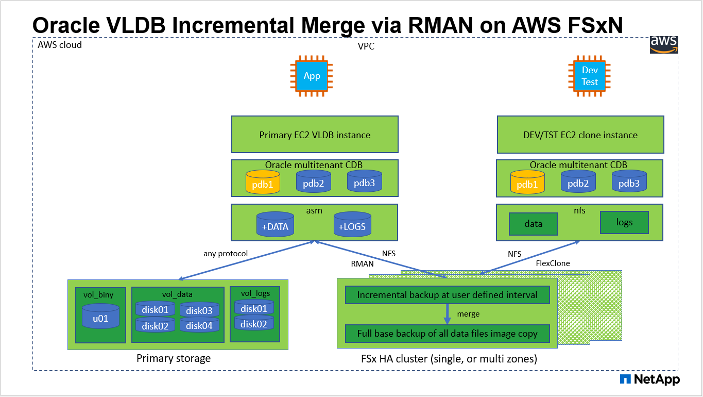
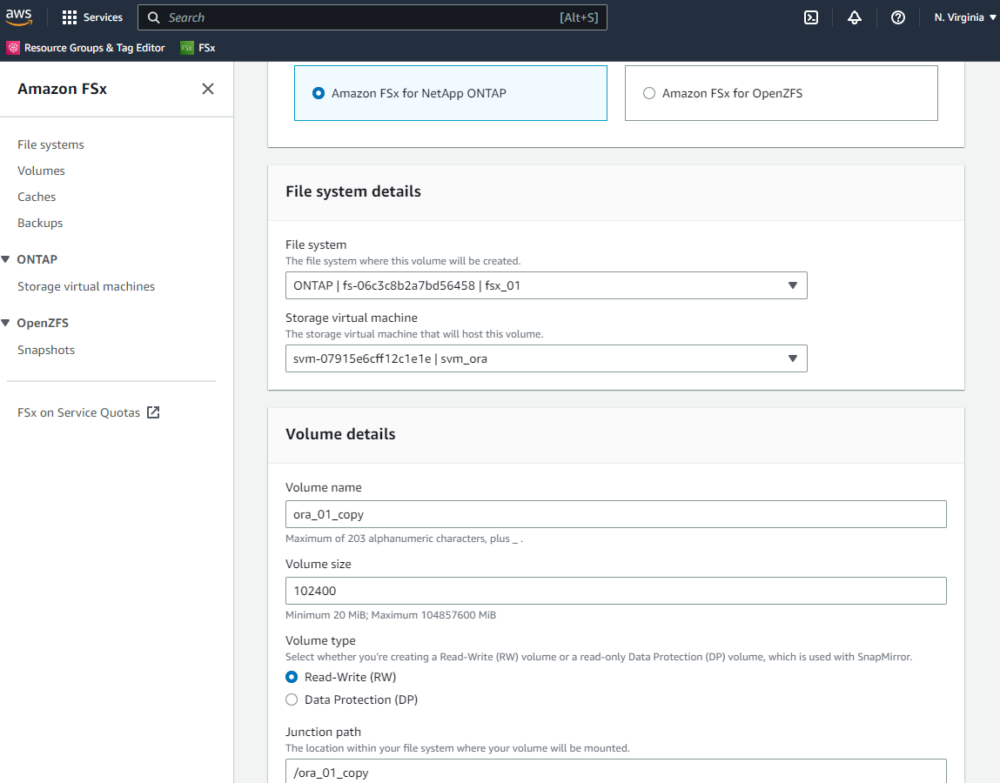

人工知能
人工知能
TR-4973：『Quick Recovery and Clone of Oracle VLDB with Incremental Merge on AWS FSx ONTAP』
 変更を提案
変更を提案
ネットアップ、Niyaz Mohamed、Allen Cao氏
目的
Oracle Recovery Manager（RMAN）バックアップツールを使用したOracleでのVLDB（Very Large Database）のリカバリは、非常に困難な作業です。障害発生時にバックアップメディアからデータベースをリストアするプロセスには時間がかかるため、データベースのリカバリが遅れ、サービスレベルアグリーメント（SLA）に大きな影響を与える可能性があります。ただし、バージョン10g以降では、Oracleデータベース・データ・ファイルのステージング・イメージ・コピーを、DBサーバ・ホスト上の追加のディスク・ストレージに作成できるRMAN機能が導入されています。これらのイメージコピーは、RMANを使用して毎日段階的に更新できます。障害が発生した場合、データベース管理者（DBA）は、障害が発生したメディアからイメージコピーにOracleデータベースを迅速に切り替えることができるため、データベースメディアを完全にリストアする必要がありません。その結果、SLAが大幅に改善されますが、必要なデータベースストレージは2倍になります。
VLDBのSLAに関心があり、OracleデータベースをAWSなどのパブリッククラウドに移動することを検討している場合は、AWS FSx ONTAPなどのリソースを使用して同様のデータベース保護構造を設定し、スタンバイデータベースのイメージコピーをステージングできます。このドキュメントでは、AWS FSx ONTAPからNFSファイルシステムをプロビジョニングおよびエクスポートしてOracleデータベースサーバにマウントし、プライマリストレージに障害が発生した場合に迅速にリカバリできるようにスタンバイデータベースコピーをステージングする方法を説明します。
さらに、ストレージに追加の投資をすることなく、開発/テスト用のOracle環境で同じスタンバイデータベースイメージコピーを使用して開発/テスト用のOracle環境を構築するなど、他のユースケースにも、NetApp FlexCloneを活用して同じステージングNFSファイルシステムのコピーを作成する方法も紹介します。
この解決策 は、次のユースケースに対応します。
-
AWS FSx ONTAPストレージのNFSマウントポイント上のRMANを介したOracle VLDBイメージコピーの差分マージ。
-
障害発生時にFSx ONTAPストレージ上のデータベースイメージコピーに切り替えることで、Oracle VLDBの迅速なリカバリを実現します。
-
Oracle VLDBイメージコピーを格納しているFSx ONTAP NFSファイルシステムボリュームをクローニングし、他のユースケースで別のデータベースインスタンスを立ち上げるために使用します。
対象者
この解決策 は、次のユーザーを対象としています。
-
データベースのリカバリを高速化するために、AWSのRMANを介したOracle VLDBイメージコピーの差分マージを設定しているDBA。
-
AWSパブリッククラウドでOracleワークロードをテストするデータベース解決策アーキテクト。
-
AWS FSx ONTAPストレージに導入されたOracleデータベースを管理するストレージ管理者。
-
AWS FSX/EC2環境でOracleデータベースを立ち上げたいアプリケーション所有者。
解決策 のテストおよび検証環境
この解決策のテストと検証は、最終的な導入環境とは異なる可能性があるAWS FSx ONTAPおよびEC2環境で実行されました。詳細については、を参照してください [Key Factors for Deployment Consideration]。
アーキテクチャ

ハードウェアおよびソフトウェアコンポーネント
* ハードウェア * |
||
FSX ONTAP ストレージ |
AWSで提供されている最新バージョン |
同じVPCとアベイラビリティゾーンに1つのFSx HAクラスタを配置します |
コンピューティングのEC2インスタンス |
t2.xlarge / 4vCPU / 16G |
2つのEC2 T2 xlarge EC2インスタンス（1つはプライマリDBサーバ、もう1つはクローンDBサーバ） |
ソフトウェア |
||
Red Hat Linux |
RHEL-8.6.0_HVM-20220503-x86_64-2- Hourly2-gp2の場合 |
テスト用にRedHatサブスクリプションを導入 |
Oracle Grid Infrastructureの略 |
バージョン19.18 |
RUパッチp34762026_190000_Linux-x86-64.zipを適用しました |
Oracle データベース |
バージョン19.18 |
RUパッチp34765931_190000_Linux-x86-64.zipを適用しました |
Oracle OPatchの略 |
バージョン12.2.0.1.36 |
最新のパッチp6880880_190000_Linux-x86-64.zip |
導入にあたって考慮すべき主な要因
-
* RMANインクリメンタルマージ用のOracle VLDBストレージレイアウト。*テストと検証では、Oracleインクリメンタルバックアップおよびマージ用のNFSボリュームを単一のFSxファイルシステムから割り当て、スループットは4GBps、SSDの物理IOPSは160,000、容量は192TiBに制限されています。しきい値を超えて導入する場合は、複数のFSxファイルシステムを複数のNFSマウントポイントと並行して連結して、より多くの容量を提供できます。
-
RMANインクリメンタル・マージを使用したOracleのリカバリ性 RMANインクリメンタル・バックアップおよびマージは'通常'RTOとRPOの目標に基づいてユーザーが定義した頻度で実行されますプライマリデータストレージやアーカイブログが完全に失われると、データが失われる可能性があります。Oracleデータベースは、FSxデータベースバックアップイメージコピーから利用できる最後の増分バックアップまでリカバリできます。データ損失を最小限に抑えるために、Oracleフラッシュリカバリ領域をFSx NFSマウントポイントに設定し、アーカイブログをデータベースイメージコピーとともにFSx NFSマウントにバックアップします。
-
* FSx NFSファイルシステムからOracle VLDBを実行*データベースバックアップ用の他のバルクストレージとは異なり、AWS FSx ONTAPはクラウド対応の本番用ストレージであり、高いレベルのパフォーマンスとストレージ効率を提供します。FSx ONTAP NFSファイルシステムでOracle VLDBがプライマリストレージからイメージコピーに切り替えれば、プライマリストレージの障害に対処しながら、データベースのパフォーマンスを高いレベルで維持できます。プライマリストレージの障害によってユーザアプリケーションのエクスペリエンスが低下することはありません。
-
その他のユースケースでは、NFSボリュームのOracle VLDBイメージコピーをFlexCloneで作成します。 AWS FSx ONTAP FlexCloneは、書き込み可能な同じNFSデータボリュームの共有コピーを提供します。したがって、Oracleデータベースがスイッチオーバーされても、ステージングOracle VLDBイメージコピーの整合性を維持しながら、他の多くのユースケースに使用できます。これにより、VLDBストレージの設置面積が大幅に削減され、ストレージコストが大幅に削減されます。NetAppでは、高いレベルでOracleのパフォーマンスを維持するために、データベースをプライマリストレージからデータベースイメージのコピーに切り替えた場合にFlexClone処理を最小限に抑えることを推奨しています。
-
* EC2コンピューティングインスタンス。*このテストと検証では、AWS EC2 T2.xlargeインスタンスをOracleデータベースコンピューティングインスタンスとして使用しました。NetAppでは、データベースワークロード向けに最適化されているため、本番環境ではOracleのコンピューティングインスタンスとしてM5タイプのEC2インスタンスを使用することを推奨しています。実際のワークロード要件に基づいて、vCPUの数とRAMの容量に合わせてEC2インスタンスのサイズを適切に設定する必要があります。
-
* FSXストレージHAクラスタのシングルゾーンまたはマルチゾーン展開。*このテストと検証では、FSX HAクラスタを単一のAWSアベイラビリティゾーンに導入しました。本番環境では、FSX HAペアを2つの異なるアベイラビリティゾーンに導入することを推奨します。FSX HAクラスタは、アクティブ/パッシブファイルシステムのペアで同期ミラーされるHAペアで、ストレージレベルの冗長性を提供するために割り当てられます。マルチゾーン導入により、単一のAWSゾーンで障害が発生した場合の高可用性がさらに向上します。
-
* FSxストレージクラスタのサイジング。* Amazon FSx for ONTAP ストレージファイルシステムは、SSDの最大16万IOPS、最大4GBpsのスループット、最大192TiBの容量を提供します。ただし、プロビジョニングされたIOPS、スループット、およびストレージ制限（最小1、024GiB）については、導入時の実際の要件に基づいてクラスタのサイジングを行うことができます。アプリケーションの可用性に影響を与えることなく、容量をオンザフライで動的に調整できます。
-
* dNFS構成。* dNFSはOracleカーネルに組み込まれており、OracleをNFSストレージに導入すると、Oracleデータベースのパフォーマンスが大幅に向上することが知られています。DNFSはOracleバイナリにパッケージ化されていますが、デフォルトではオンになっていません。NFS上にOracleデータベースを導入する場合は、このオプションをオンにする必要があります。VLDBに複数のFSxファイルシステムを導入する場合は、異なるFSx NFSファイルシステムへのdNFSマルチパスを適切に設定する必要があります。
解決策 の導入
ここでは、VPC内のAWS EC2環境にOracle VLDBが導入済みであることを前提としています。AWSへのOracleの導入についてサポートが必要な場合は、次のテクニカルレポートを参照してください。
Oracle VLDBは、FSx ONTAPまたはAWS EC2エコシステム内の任意のストレージで実行できます。次のセクションでは、AWS FSx ONTAPストレージのNFSマウントにステージングされているOracle VLDBのイメージコピーへのRMANインクリメンタルマージを設定するための、ステップバイステップの導入手順を示します。
導入の前提条件
Details
導入には、次の前提条件が必要です。
-
AWSアカウントが設定され、必要なVPCとネットワークセグメントがAWSアカウント内に作成されている。
-
AWS EC2コンソールから、2つのEC2 Linuxインスタンスを導入する必要があります。1つはプライマリOracle DBサーバとして、もう1つはオプションのクローンターゲットDBサーバとして使用します。環境セットアップの詳細については、前のセクションのアーキテクチャ図を参照してください。また、も参照してください "Linuxインスタンスのユーザーガイド" を参照してください。
-
AWS EC2コンソールから、Amazon FSx for ONTAPストレージHAクラスタを導入して、Oracleデータベースのスタンバイイメージコピーを格納するNFSボリュームをホストします。FSXストレージの導入に慣れていない場合は、マニュアルを参照してください "ONTAP ファイルシステム用のFSXを作成しています" を参照してください。
-
手順2と3は、次のTerraform自動化ツールキットを使用して実行できます。このツールキットでは、という名前のEC2インスタンスが作成されます
ora_01という名前のFSxファイルシステムがありますfsx_01。実行する前に、指示をよく確認し、環境に合わせて変数を変更してください。テンプレートは、独自の導入要件に合わせて簡単に変更できます。git clone https://github.com/NetApp-Automation/na_aws_fsx_ec2_deploy.git

|
Oracleインストールファイルをステージングするための十分なスペースを確保するために、EC2インスタンスのルートボリュームに少なくとも50Gが割り当てられていることを確認してください。 |
EC2 DBインスタンスホストにマウントするNFSボリュームをプロビジョニングおよびエクスポートします
Details
このデモでは、FSXクラスタ管理IPを介してfsxadminユーザとしてssh経由でFSXクラスタにログインし、コマンドラインからNFSボリュームをプロビジョニングする方法を説明します。または、AWS FSxコンソールを使用してボリュームを割り当てることもできます。データベースのサイズに対応するように複数のFSxファイルシステムが設定されている場合は、他のFSxファイルシステムについても同じ手順を繰り返します。
-
まず、fsxadminユーザとしてSSH経由でFSxクラスタにログインし、CLIを使用してNFSボリュームをプロビジョニングします。FSxクラスタ管理IPアドレスを変更します。このIPアドレスは、AWS FSx ONTAP UIコンソールから取得できます。
ssh fsxadmin@172.30.15.53 -
プライマリOracle VLDBデータベースのデータファイルのイメージコピーを格納するために、プライマリストレージと同じサイズのNFSボリュームを作成します。
vol create -volume ora_01_copy -aggregate aggr1 -size 100G -state online -type RW -junction-path /ora_01_copy -snapshot-policy none -tiering-policy snapshot-only -
または、AWS FSxコンソールUIからStorage Efficiencyオプションを使用してボリュームをプロビジョニングすることもできます
Enabled、セキュリティ形式Unix、SnapshotポリシーNone、およびストレージ階層化Snapshot Only以下に示すように。
-
Oracleデータベース用にカスタマイズしたSnapshotポリシーを作成し、日次スケジュールと30日間の保持期間を設定します。Snapshotの頻度と保持期間について、特定のニーズに合わせてポリシーを調整する必要があります。
snapshot policy create -policy oracle -enabled true -schedule1 daily -count1 30RMAN増分バックアップおよびマージ用にプロビジョニングされたNFSボリュームにポリシーを適用します。
vol modify -volume ora_01_copy -snapshot-policy oracle -
EC2インスタンスにec2-userとしてログインし、/nfsfsxnディレクトリを作成します。追加のFSxファイルシステム用に追加のマウントポイントディレクトリを作成します。
sudo mkdir /nfsfsxn -
FSx ONTAP NFSボリュームをEC2 DBインスタンスホストにマウントします。FSx仮想サーバのNFS LIFアドレスを変更します。NFS LIFのアドレスは、FSx ONTAP UIコンソールから取得できます。
sudo mount 172.30.15.19:/ora_01_copy /nfsfsxn -o rw,bg,hard,vers=3,proto=tcp,timeo=600,rsize=262144,wsize=262144,nointr -
マウントポイントの所有権をoracle：oisntallに変更し、必要に応じてOracleユーザ名とプライマリグループを変更します。
sudo chown oracle:oinstall /nfsfsxn
FSx上のイメージコピーへのOracle RMANインクリメンタルマージをセットアップします
Details
RMANインクリメンタルマージは、増分バックアップ/マージ間隔ごとに、ステージングデータベースデータファイルのイメージコピーを継続的に更新します。データベースバックアップのイメージコピーは、増分バックアップ/マージを実行する頻度と同じように最新の状態になります。そのため、RMANの増分バックアップとマージの頻度を決定する際には、データベースのパフォーマンス、RTO、RPOの目標を考慮してください。
-
プライマリDBサーバEC2インスタンスにOracleユーザとしてログインします
-
マウントポイント/nfsfsxnの下にoracopyディレクトリを作成して、OracleデータファイルのイメージコピーとOracleフラッシュリカバリ領域のarchlogディレクトリを格納します。
mkdir /nfsfsxn/oracopymkdir /nfsfsxn/archlog -
sqlplusを使用してOracleデータベースにログインし、ブロック変更追跡を有効にして増分バックアップを高速化し、Oracleフラッシュリカバリ領域が現在プライマリストレージにある場合はFSxNマウントに変更します。これにより、RMANのデフォルトの制御ファイル/spfile自動バックアップおよびアーカイブログを、リカバリ用にFSxN NFSマウントにバックアップできます。
sqlplus / as sysdbasqlplusプロンプトで、次のコマンドを実行します。
alter database enable block change tracking using file '/nfsfsxn/oracopy/bct_db1.ctf'alter system set db_recovery_file_dest='/nfsfsxn/archlog/' scope=both; -
RMANバックアップおよび増分マージスクリプトを作成します。スクリプトは、並列RMANバックアップおよびマージ用に複数のチャネルを割り当てます。最初に実行すると、最初の完全なベースラインイメージコピーが生成されます。完全な実行では、ステージング領域をクリーンに保つために、保持期間外の古いバックアップが最初に削除されます。その後、マージとバックアップの前に現在のログファイルを切り替えます。増分バックアップはマージ後に実行されるため、データベースイメージコピーは現在のデータベース状態を1回のバックアップ/マージサイクルごとに追跡されます。マージとバックアップの順序を逆にして、ユーザーの好みに合わせて迅速にリカバリすることができます。RMANスクリプトは'プライマリDBサーバのcrontabから実行する単純なシェルスクリプトに統合できます制御ファイルの自動バックアップがRMAN設定でオンになっていることを確認します。
vi /home/oracle/rman_bkup_merge.cmd Add following lines: RUN { allocate channel c1 device type disk format '/nfsfsxn/oracopy/%U'; allocate channel c2 device type disk format '/nfsfsxn/oracopy/%U'; allocate channel c3 device type disk format '/nfsfsxn/oracopy/%U'; allocate channel c4 device type disk format '/nfsfsxn/oracopy/%U'; delete obsolete; sql 'alter system archive log current'; recover copy of database with tag 'OraCopyBKUPonFSxN_level_0'; backup incremental level 1 copies=1 for recover of copy with tag 'OraCopyBKUPonFSxN_level_0' database; } -
EC2 DBサーバで、OracleユーザとしてRMANにローカルにログインします（RMANカタログの有無は問いません）。このデモでは、RMANカタログには接続しません。
rman target / nocatalog; output: [oracle@ip-172-30-15-99 ~]$ rman target / nocatalog; Recovery Manager: Release 19.0.0.0.0 - Production on Wed May 24 17:44:49 2023 Version 19.18.0.0.0 Copyright (c) 1982, 2019, Oracle and/or its affiliates. All rights reserved. connected to target database: DB1 (DBID=1730530050) using target database control file instead of recovery catalog RMAN>
-
RMANプロンプトで、スクリプトを実行します。最初の実行でベースラインデータベースイメージコピーが作成され、以降の実行ではベースラインイメージコピーがマージおよび更新されます。スクリプトの実行方法と一般的な出力を次に示します。ホストのCPUコアに一致するチャネル数を設定します。
RMAN> @/home/oracle/rman_bkup_merge.cmd RMAN> RUN 2> { 3> allocate channel c1 device type disk format '/nfsfsxn/oracopy/%U'; 4> allocate channel c2 device type disk format '/nfsfsxn/oracopy/%U'; 5> allocate channel c3 device type disk format '/nfsfsxn/oracopy/%U'; 6> allocate channel c4 device type disk format '/nfsfsxn/oracopy/%U'; 7> delete obsolete; 8> sql 'alter system archive log current'; 9> recover copy of database with tag 'OraCopyBKUPonFSxN_level_0'; 10> backup incremental level 1 copies=1 for recover of copy with tag 'OraCopyBKUPonFSxN_level_0' database; 11> } allocated channel: c1 channel c1: SID=411 device type=DISK allocated channel: c2 channel c2: SID=146 device type=DISK allocated channel: c3 channel c3: SID=402 device type=DISK allocated channel: c4 channel c4: SID=37 device type=DISK Starting recover at 17-MAY-23 no copy of datafile 1 found to recover no copy of datafile 3 found to recover no copy of datafile 4 found to recover no copy of datafile 5 found to recover no copy of datafile 6 found to recover no copy of datafile 7 found to recover . . Finished recover at 17-MAY-23 Starting backup at 17-MAY-23 channel c1: starting incremental level 1 datafile backup set channel c1: specifying datafile(s) in backup set input datafile file number=00022 name=+DATA/DB1/FB867DA8C68C816EE053630F1EAC2BCF/DATAFILE/soe.287.1137018311 input datafile file number=00026 name=+DATA/DB1/FB867DA8C68C816EE053630F1EAC2BCF/DATAFILE/soe.291.1137018481 input datafile file number=00030 name=+DATA/DB1/FB867DA8C68C816EE053630F1EAC2BCF/DATAFILE/soe.295.1137018787 input datafile file number=00011 name=+DATA/DB1/FB867DA8C68C816EE053630F1EAC2BCF/DATAFILE/undotbs1.271.1136668041 input datafile file number=00035 name=+DATA/DB1/FB867DA8C68C816EE053630F1EAC2BCF/DATAFILE/soe.300.1137019181 channel c1: starting piece 1 at 17-MAY-23 channel c2: starting incremental level 1 datafile backup set channel c2: specifying datafile(s) in backup set input datafile file number=00023 name=+DATA/DB1/FB867DA8C68C816EE053630F1EAC2BCF/DATAFILE/soe.288.1137018359 input datafile file number=00027 name=+DATA/DB1/FB867DA8C68C816EE053630F1EAC2BCF/DATAFILE/soe.292.1137018523 input datafile file number=00031 name=+DATA/DB1/FB867DA8C68C816EE053630F1EAC2BCF/DATAFILE/soe.296.1137018837 input datafile file number=00009 name=+DATA/DB1/FB867DA8C68C816EE053630F1EAC2BCF/DATAFILE/system.272.1136668041 input datafile file number=00034 name=+DATA/DB1/FB867DA8C68C816EE053630F1EAC2BCF/DATAFILE/soe.299.1137019117 . . Finished backup at 17-MAY-23 Starting Control File and SPFILE Autobackup at 17-MAY-23 piece handle=+LOGS/DB1/AUTOBACKUP/2023_05_17/s_1137095435.367.1137095435 comment=NONE Finished Control File and SPFILE Autobackup at 17-MAY-23 released channel: c1 released channel: c2 released channel: c3 released channel: c4 RMAN> **end-of-file** -
バックアップ後のデータベースイメージのコピーをリストして、FSx ONTAP NFSマウントポイントにデータベースイメージのコピーが作成されたことを確認します。
RMAN> list copy of database tag 'OraCopyBKUPonFSxN_level_0'; List of Datafile Copies ======================= Key File S Completion Time Ckp SCN Ckp Time Sparse ------- ---- - --------------- ---------- --------------- ------ 19 1 A 17-MAY-23 3009819 17-MAY-23 NO Name: /nfsfsxn/oracopy/data_D-DB1_I-1730530050_TS-SYSTEM_FNO-1_0h1sd7ae Tag: ORACOPYBKUPONFSXN_LEVEL_0 20 3 A 17-MAY-23 3009826 17-MAY-23 NO Name: /nfsfsxn/oracopy/data_D-DB1_I-1730530050_TS-SYSAUX_FNO-3_0i1sd7at Tag: ORACOPYBKUPONFSXN_LEVEL_0 21 4 A 17-MAY-23 3009830 17-MAY-23 NO Name: /nfsfsxn/oracopy/data_D-DB1_I-1730530050_TS-UNDOTBS1_FNO-4_0j1sd7b4 Tag: ORACOPYBKUPONFSXN_LEVEL_0 27 5 A 17-MAY-23 2383520 12-MAY-23 NO Name: /nfsfsxn/oracopy/data_D-DB1_I-1730530050_TS-SYSTEM_FNO-5_0p1sd7cf Tag: ORACOPYBKUPONFSXN_LEVEL_0 Container ID: 2, PDB Name: PDB$SEED 26 6 A 17-MAY-23 2383520 12-MAY-23 NO Name: /nfsfsxn/oracopy/data_D-DB1_I-1730530050_TS-SYSAUX_FNO-6_0o1sd7c8 Tag: ORACOPYBKUPONFSXN_LEVEL_0 Container ID: 2, PDB Name: PDB$SEED 34 7 A 17-MAY-23 3009907 17-MAY-23 NO Name: /nfsfsxn/oracopy/data_D-DB1_I-1730530050_TS-USERS_FNO-7_101sd7dl Tag: ORACOPYBKUPONFSXN_LEVEL_0 33 8 A 17-MAY-23 2383520 12-MAY-23 NO Name: /nfsfsxn/oracopy/data_D-DB1_I-1730530050_TS-UNDOTBS1_FNO-8_0v1sd7di Tag: ORACOPYBKUPONFSXN_LEVEL_0 Container ID: 2, PDB Name: PDB$SEED 28 9 A 17-MAY-23 3009871 17-MAY-23 NO Name: /nfsfsxn/oracopy/data_D-DB1_I-1730530050_TS-SYSTEM_FNO-9_0q1sd7cm Tag: ORACOPYBKUPONFSXN_LEVEL_0 Container ID: 3, PDB Name: DB1_PDB1 22 10 A 17-MAY-23 3009849 17-MAY-23 NO Name: /nfsfsxn/oracopy/data_D-DB1_I-1730530050_TS-SYSAUX_FNO-10_0k1sd7bb Tag: ORACOPYBKUPONFSXN_LEVEL_0 Container ID: 3, PDB Name: DB1_PDB1 25 11 A 17-MAY-23 3009862 17-MAY-23 NO Name: /nfsfsxn/oracopy/data_D-DB1_I-1730530050_TS-UNDOTBS1_FNO-11_0n1sd7c1 Tag: ORACOPYBKUPONFSXN_LEVEL_0 Container ID: 3, PDB Name: DB1_PDB1 35 12 A 17-MAY-23 3009909 17-MAY-23 NO Name: /nfsfsxn/oracopy/data_D-DB1_I-1730530050_TS-USERS_FNO-12_111sd7dm Tag: ORACOPYBKUPONFSXN_LEVEL_0 Container ID: 3, PDB Name: DB1_PDB1 29 13 A 17-MAY-23 3009876 17-MAY-23 NO Name: /nfsfsxn/oracopy/data_D-DB1_I-1730530050_TS-SYSTEM_FNO-13_0r1sd7ct Tag: ORACOPYBKUPONFSXN_LEVEL_0 Container ID: 4, PDB Name: DB1_PDB2 23 14 A 17-MAY-23 3009854 17-MAY-23 NO Name: /nfsfsxn/oracopy/data_D-DB1_I-1730530050_TS-SYSAUX_FNO-14_0l1sd7bi Tag: ORACOPYBKUPONFSXN_LEVEL_0 Container ID: 4, PDB Name: DB1_PDB2 31 15 A 17-MAY-23 3009900 17-MAY-23 NO Name: /nfsfsxn/oracopy/data_D-DB1_I-1730530050_TS-UNDOTBS1_FNO-15_0t1sd7db Tag: ORACOPYBKUPONFSXN_LEVEL_0 Container ID: 4, PDB Name: DB1_PDB2 36 16 A 17-MAY-23 3009911 17-MAY-23 NO Name: /nfsfsxn/oracopy/data_D-DB1_I-1730530050_TS-USERS_FNO-16_121sd7dn Tag: ORACOPYBKUPONFSXN_LEVEL_0 Container ID: 4, PDB Name: DB1_PDB2 30 17 A 17-MAY-23 3009895 17-MAY-23 NO Name: /nfsfsxn/oracopy/data_D-DB1_I-1730530050_TS-SYSTEM_FNO-17_0s1sd7d4 Tag: ORACOPYBKUPONFSXN_LEVEL_0 Container ID: 5, PDB Name: DB1_PDB3 24 18 A 17-MAY-23 3009858 17-MAY-23 NO Name: /nfsfsxn/oracopy/data_D-DB1_I-1730530050_TS-SYSAUX_FNO-18_0m1sd7bq Tag: ORACOPYBKUPONFSXN_LEVEL_0 Container ID: 5, PDB Name: DB1_PDB3 32 19 A 17-MAY-23 3009903 17-MAY-23 NO Name: /nfsfsxn/oracopy/data_D-DB1_I-1730530050_TS-UNDOTBS1_FNO-19_0u1sd7de Tag: ORACOPYBKUPONFSXN_LEVEL_0 Container ID: 5, PDB Name: DB1_PDB3 37 20 A 17-MAY-23 3009914 17-MAY-23 NO Name: /nfsfsxn/oracopy/data_D-DB1_I-1730530050_TS-USERS_FNO-20_131sd7do Tag: ORACOPYBKUPONFSXN_LEVEL_0 Container ID: 5, PDB Name: DB1_PDB3 4 21 A 17-MAY-23 3009019 17-MAY-23 NO Name: /nfsfsxn/oracopy/data_D-DB1_I-1730530050_TS-SOE_FNO-21_021sd6pv Tag: ORACOPYBKUPONFSXN_LEVEL_0 Container ID: 3, PDB Name: DB1_PDB1 5 22 A 17-MAY-23 3009419 17-MAY-23 NO Name: /nfsfsxn/oracopy/data_D-DB1_I-1730530050_TS-SOE_FNO-22_031sd6r2 Tag: ORACOPYBKUPONFSXN_LEVEL_0 Container ID: 3, PDB Name: DB1_PDB1 6 23 A 17-MAY-23 3009460 17-MAY-23 NO Name: /nfsfsxn/oracopy/data_D-DB1_I-1730530050_TS-SOE_FNO-23_041sd6s5 Tag: ORACOPYBKUPONFSXN_LEVEL_0 Container ID: 3, PDB Name: DB1_PDB1 7 24 A 17-MAY-23 3009473 17-MAY-23 NO Name: /nfsfsxn/oracopy/data_D-DB1_I-1730530050_TS-SOE_FNO-24_051sd6t9 Tag: ORACOPYBKUPONFSXN_LEVEL_0 Container ID: 3, PDB Name: DB1_PDB1 8 25 A 17-MAY-23 3009502 17-MAY-23 NO Name: /nfsfsxn/oracopy/data_D-DB1_I-1730530050_TS-SOE_FNO-25_061sd6uc Tag: ORACOPYBKUPONFSXN_LEVEL_0 Container ID: 3, PDB Name: DB1_PDB1 9 26 A 17-MAY-23 3009548 17-MAY-23 NO Name: /nfsfsxn/oracopy/data_D-DB1_I-1730530050_TS-SOE_FNO-26_071sd6vf Tag: ORACOPYBKUPONFSXN_LEVEL_0 Container ID: 3, PDB Name: DB1_PDB1 10 27 A 17-MAY-23 3009576 17-MAY-23 NO Name: /nfsfsxn/oracopy/data_D-DB1_I-1730530050_TS-SOE_FNO-27_081sd70i Tag: ORACOPYBKUPONFSXN_LEVEL_0 Container ID: 3, PDB Name: DB1_PDB1 11 28 A 17-MAY-23 3009590 17-MAY-23 NO Name: /nfsfsxn/oracopy/data_D-DB1_I-1730530050_TS-SOE_FNO-28_091sd71l Tag: ORACOPYBKUPONFSXN_LEVEL_0 Container ID: 3, PDB Name: DB1_PDB1 12 29 A 17-MAY-23 3009619 17-MAY-23 NO Name: /nfsfsxn/oracopy/data_D-DB1_I-1730530050_TS-SOE_FNO-29_0a1sd72o Tag: ORACOPYBKUPONFSXN_LEVEL_0 Container ID: 3, PDB Name: DB1_PDB1 13 30 A 17-MAY-23 3009648 17-MAY-23 NO Name: /nfsfsxn/oracopy/data_D-DB1_I-1730530050_TS-SOE_FNO-30_0b1sd73r Tag: ORACOPYBKUPONFSXN_LEVEL_0 Container ID: 3, PDB Name: DB1_PDB1 14 31 A 17-MAY-23 3009671 17-MAY-23 NO Name: /nfsfsxn/oracopy/data_D-DB1_I-1730530050_TS-SOE_FNO-31_0c1sd74u Tag: ORACOPYBKUPONFSXN_LEVEL_0 Container ID: 3, PDB Name: DB1_PDB1 15 32 A 17-MAY-23 3009729 17-MAY-23 NO Name: /nfsfsxn/oracopy/data_D-DB1_I-1730530050_TS-SOE_FNO-32_0d1sd762 Tag: ORACOPYBKUPONFSXN_LEVEL_0 Container ID: 3, PDB Name: DB1_PDB1 16 33 A 17-MAY-23 3009743 17-MAY-23 NO Name: /nfsfsxn/oracopy/data_D-DB1_I-1730530050_TS-SOE_FNO-33_0e1sd775 Tag: ORACOPYBKUPONFSXN_LEVEL_0 Container ID: 3, PDB Name: DB1_PDB1 17 34 A 17-MAY-23 3009771 17-MAY-23 NO Name: /nfsfsxn/oracopy/data_D-DB1_I-1730530050_TS-SOE_FNO-34_0f1sd788 Tag: ORACOPYBKUPONFSXN_LEVEL_0 Container ID: 3, PDB Name: DB1_PDB1 18 35 A 17-MAY-23 3009805 17-MAY-23 NO Name: /nfsfsxn/oracopy/data_D-DB1_I-1730530050_TS-SOE_FNO-35_0g1sd79b Tag: ORACOPYBKUPONFSXN_LEVEL_0 Container ID: 3, PDB Name: DB1_PDB1 RMAN> -
Oracle RMANコマンドプロンプトからスキーマをレポートし、現在のアクティブデータベースデータファイルがプライマリストレージのASM+データディスクグループにあることを確認します。
RMAN> report schema; Report of database schema for database with db_unique_name DB1 List of Permanent Datafiles =========================== File Size(MB) Tablespace RB segs Datafile Name ---- -------- -------------------- ------- ------------------------ 1 1060 SYSTEM YES +DATA/DB1/DATAFILE/system.257.1136666315 3 810 SYSAUX NO +DATA/DB1/DATAFILE/sysaux.258.1136666361 4 675 UNDOTBS1 YES +DATA/DB1/DATAFILE/undotbs1.259.1136666385 5 400 PDB$SEED:SYSTEM NO +DATA/DB1/86B637B62FE07A65E053F706E80A27CA/DATAFILE/system.266.1136667165 6 460 PDB$SEED:SYSAUX NO +DATA/DB1/86B637B62FE07A65E053F706E80A27CA/DATAFILE/sysaux.267.1136667165 7 5 USERS NO +DATA/DB1/DATAFILE/users.260.1136666387 8 230 PDB$SEED:UNDOTBS1 NO +DATA/DB1/86B637B62FE07A65E053F706E80A27CA/DATAFILE/undotbs1.268.1136667165 9 400 DB1_PDB1:SYSTEM YES +DATA/DB1/FB867DA8C68C816EE053630F1EAC2BCF/DATAFILE/system.272.1136668041 10 490 DB1_PDB1:SYSAUX NO +DATA/DB1/FB867DA8C68C816EE053630F1EAC2BCF/DATAFILE/sysaux.273.1136668041 11 465 DB1_PDB1:UNDOTBS1 YES +DATA/DB1/FB867DA8C68C816EE053630F1EAC2BCF/DATAFILE/undotbs1.271.1136668041 12 5 DB1_PDB1:USERS NO +DATA/DB1/FB867DA8C68C816EE053630F1EAC2BCF/DATAFILE/users.275.1136668057 13 400 DB1_PDB2:SYSTEM YES +DATA/DB1/FB867EA89ECF81C0E053630F1EACB901/DATAFILE/system.277.1136668057 14 470 DB1_PDB2:SYSAUX NO +DATA/DB1/FB867EA89ECF81C0E053630F1EACB901/DATAFILE/sysaux.278.1136668057 15 235 DB1_PDB2:UNDOTBS1 YES +DATA/DB1/FB867EA89ECF81C0E053630F1EACB901/DATAFILE/undotbs1.276.1136668057 16 5 DB1_PDB2:USERS NO +DATA/DB1/FB867EA89ECF81C0E053630F1EACB901/DATAFILE/users.280.1136668071 17 400 DB1_PDB3:SYSTEM YES +DATA/DB1/FB867F8A4D4F821CE053630F1EAC69CC/DATAFILE/system.282.1136668073 18 470 DB1_PDB3:SYSAUX NO +DATA/DB1/FB867F8A4D4F821CE053630F1EAC69CC/DATAFILE/sysaux.283.1136668073 19 235 DB1_PDB3:UNDOTBS1 YES +DATA/DB1/FB867F8A4D4F821CE053630F1EAC69CC/DATAFILE/undotbs1.281.1136668073 20 5 DB1_PDB3:USERS NO +DATA/DB1/FB867F8A4D4F821CE053630F1EAC69CC/DATAFILE/users.285.1136668087 21 4096 DB1_PDB1:SOE NO +DATA/DB1/FB867DA8C68C816EE053630F1EAC2BCF/DATAFILE/soe.286.1137018239 22 4096 DB1_PDB1:SOE NO +DATA/DB1/FB867DA8C68C816EE053630F1EAC2BCF/DATAFILE/soe.287.1137018311 23 4096 DB1_PDB1:SOE NO +DATA/DB1/FB867DA8C68C816EE053630F1EAC2BCF/DATAFILE/soe.288.1137018359 24 4096 DB1_PDB1:SOE NO +DATA/DB1/FB867DA8C68C816EE053630F1EAC2BCF/DATAFILE/soe.289.1137018405 25 4096 DB1_PDB1:SOE NO +DATA/DB1/FB867DA8C68C816EE053630F1EAC2BCF/DATAFILE/soe.290.1137018443 26 4096 DB1_PDB1:SOE NO +DATA/DB1/FB867DA8C68C816EE053630F1EAC2BCF/DATAFILE/soe.291.1137018481 27 4096 DB1_PDB1:SOE NO +DATA/DB1/FB867DA8C68C816EE053630F1EAC2BCF/DATAFILE/soe.292.1137018523 28 4096 DB1_PDB1:SOE NO +DATA/DB1/FB867DA8C68C816EE053630F1EAC2BCF/DATAFILE/soe.293.1137018707 29 4096 DB1_PDB1:SOE NO +DATA/DB1/FB867DA8C68C816EE053630F1EAC2BCF/DATAFILE/soe.294.1137018745 30 4096 DB1_PDB1:SOE NO +DATA/DB1/FB867DA8C68C816EE053630F1EAC2BCF/DATAFILE/soe.295.1137018787 31 4096 DB1_PDB1:SOE NO +DATA/DB1/FB867DA8C68C816EE053630F1EAC2BCF/DATAFILE/soe.296.1137018837 32 4096 DB1_PDB1:SOE NO +DATA/DB1/FB867DA8C68C816EE053630F1EAC2BCF/DATAFILE/soe.297.1137018935 33 4096 DB1_PDB1:SOE NO +DATA/DB1/FB867DA8C68C816EE053630F1EAC2BCF/DATAFILE/soe.298.1137019077 34 4096 DB1_PDB1:SOE NO +DATA/DB1/FB867DA8C68C816EE053630F1EAC2BCF/DATAFILE/soe.299.1137019117 35 4096 DB1_PDB1:SOE NO +DATA/DB1/FB867DA8C68C816EE053630F1EAC2BCF/DATAFILE/soe.300.1137019181 List of Temporary Files ======================= File Size(MB) Tablespace Maxsize(MB) Tempfile Name ---- -------- -------------------- ----------- -------------------- 1 123 TEMP 32767 +DATA/DB1/TEMPFILE/temp.265.1136666447 2 123 PDB$SEED:TEMP 32767 +DATA/DB1/FB864A929AEB79B9E053630F1EAC7046/TEMPFILE/temp.269.1136667185 3 10240 DB1_PDB1:TEMP 32767 +DATA/DB1/FB867DA8C68C816EE053630F1EAC2BCF/TEMPFILE/temp.274.1136668051 4 123 DB1_PDB2:TEMP 32767 +DATA/DB1/FB867EA89ECF81C0E053630F1EACB901/TEMPFILE/temp.279.1136668067 5 123 DB1_PDB3:TEMP 32767 +DATA/DB1/FB867F8A4D4F821CE053630F1EAC69CC/TEMPFILE/temp.284.1136668081 RMAN>
-
OS NFSマウントポイントからのデータベースイメージコピーを検証します。
[oracle@ip-172-30-15-99 ~]$ ls -l /nfsfsxn/oracopy/ total 70585148 -rw-r----- 1 oracle asm 4294975488 May 17 18:09 data_D-DB1_I-1730530050_TS-SOE_FNO-21_021sd6pv -rw-r----- 1 oracle asm 4294975488 May 17 18:10 data_D-DB1_I-1730530050_TS-SOE_FNO-22_031sd6r2 -rw-r----- 1 oracle asm 4294975488 May 17 18:10 data_D-DB1_I-1730530050_TS-SOE_FNO-23_041sd6s5 -rw-r----- 1 oracle asm 4294975488 May 17 18:11 data_D-DB1_I-1730530050_TS-SOE_FNO-24_051sd6t9 -rw-r----- 1 oracle asm 4294975488 May 17 18:11 data_D-DB1_I-1730530050_TS-SOE_FNO-25_061sd6uc -rw-r----- 1 oracle asm 4294975488 May 17 18:12 data_D-DB1_I-1730530050_TS-SOE_FNO-26_071sd6vf -rw-r----- 1 oracle asm 4294975488 May 17 18:13 data_D-DB1_I-1730530050_TS-SOE_FNO-27_081sd70i -rw-r----- 1 oracle asm 4294975488 May 17 18:13 data_D-DB1_I-1730530050_TS-SOE_FNO-28_091sd71l -rw-r----- 1 oracle asm 4294975488 May 17 18:14 data_D-DB1_I-1730530050_TS-SOE_FNO-29_0a1sd72o -rw-r----- 1 oracle asm 4294975488 May 17 18:14 data_D-DB1_I-1730530050_TS-SOE_FNO-30_0b1sd73r -rw-r----- 1 oracle asm 4294975488 May 17 18:15 data_D-DB1_I-1730530050_TS-SOE_FNO-31_0c1sd74u -rw-r----- 1 oracle asm 4294975488 May 17 18:16 data_D-DB1_I-1730530050_TS-SOE_FNO-32_0d1sd762 -rw-r----- 1 oracle asm 4294975488 May 17 18:16 data_D-DB1_I-1730530050_TS-SOE_FNO-33_0e1sd775 -rw-r----- 1 oracle asm 4294975488 May 17 18:17 data_D-DB1_I-1730530050_TS-SOE_FNO-34_0f1sd788 -rw-r----- 1 oracle asm 4294975488 May 17 18:17 data_D-DB1_I-1730530050_TS-SOE_FNO-35_0g1sd79b -rw-r----- 1 oracle asm 513810432 May 17 18:18 data_D-DB1_I-1730530050_TS-SYSAUX_FNO-10_0k1sd7bb -rw-r----- 1 oracle asm 492838912 May 17 18:18 data_D-DB1_I-1730530050_TS-SYSAUX_FNO-14_0l1sd7bi -rw-r----- 1 oracle asm 492838912 May 17 18:18 data_D-DB1_I-1730530050_TS-SYSAUX_FNO-18_0m1sd7bq -rw-r----- 1 oracle asm 849354752 May 17 18:18 data_D-DB1_I-1730530050_TS-SYSAUX_FNO-3_0i1sd7at -rw-r----- 1 oracle asm 482353152 May 17 18:18 data_D-DB1_I-1730530050_TS-SYSAUX_FNO-6_0o1sd7c8 -rw-r----- 1 oracle asm 1111498752 May 17 18:18 data_D-DB1_I-1730530050_TS-SYSTEM_FNO-1_0h1sd7ae -rw-r----- 1 oracle asm 419438592 May 17 18:19 data_D-DB1_I-1730530050_TS-SYSTEM_FNO-13_0r1sd7ct -rw-r----- 1 oracle asm 419438592 May 17 18:19 data_D-DB1_I-1730530050_TS-SYSTEM_FNO-17_0s1sd7d4 -rw-r----- 1 oracle asm 419438592 May 17 18:19 data_D-DB1_I-1730530050_TS-SYSTEM_FNO-5_0p1sd7cf -rw-r----- 1 oracle asm 419438592 May 17 18:19 data_D-DB1_I-1730530050_TS-SYSTEM_FNO-9_0q1sd7cm -rw-r----- 1 oracle asm 487596032 May 17 18:18 data_D-DB1_I-1730530050_TS-UNDOTBS1_FNO-11_0n1sd7c1 -rw-r----- 1 oracle asm 246423552 May 17 18:19 data_D-DB1_I-1730530050_TS-UNDOTBS1_FNO-15_0t1sd7db -rw-r----- 1 oracle asm 246423552 May 17 18:19 data_D-DB1_I-1730530050_TS-UNDOTBS1_FNO-19_0u1sd7de -rw-r----- 1 oracle asm 707796992 May 17 18:18 data_D-DB1_I-1730530050_TS-UNDOTBS1_FNO-4_0j1sd7b4 -rw-r----- 1 oracle asm 241180672 May 17 18:19 data_D-DB1_I-1730530050_TS-UNDOTBS1_FNO-8_0v1sd7di -rw-r----- 1 oracle asm 5251072 May 17 18:19 data_D-DB1_I-1730530050_TS-USERS_FNO-12_111sd7dm -rw-r----- 1 oracle asm 5251072 May 17 18:19 data_D-DB1_I-1730530050_TS-USERS_FNO-16_121sd7dn -rw-r----- 1 oracle asm 5251072 May 17 18:19 data_D-DB1_I-1730530050_TS-USERS_FNO-20_131sd7do -rw-r----- 1 oracle asm 5251072 May 17 18:19 data_D-DB1_I-1730530050_TS-USERS_FNO-7_101sd7dl
これで、Oracleデータベーススタンバイイメージコピーのバックアップおよびマージのセットアップは完了です。
迅速なリカバリのために、Oracle DBをイメージコピーに切り替えます
Details
プライマリストレージの問題でデータの損失や破損などの障害が発生した場合、FSx ONTAP NFSマウント上のイメージコピーにデータベースをすばやく切り替えて、データベースをリストアすることなく現在の状態にリカバリできます。メディア・リストアを排除することで'VLDBのデータベース・リカバリが大幅に高速化されますこのユースケースでは、データベースホストインスタンスに問題がなく、データベース制御ファイル、アーカイブログ、および現在のログがすべてリカバリに使用可能であることを前提としています。
-
スイッチオーバー前に、EC2 DBサーバ・ホストにOracleユーザとしてログインし、テスト・テーブルを作成します。
[ec2-user@ip-172-30-15-99 ~]$ sudo su [root@ip-172-30-15-99 ec2-user]# su - oracle Last login: Thu May 18 14:22:34 UTC 2023 [oracle@ip-172-30-15-99 ~]$ sqlplus / as sysdba SQL*Plus: Release 19.0.0.0.0 - Production on Thu May 18 14:30:36 2023 Version 19.18.0.0.0 Copyright (c) 1982, 2022, Oracle. All rights reserved. Connected to: Oracle Database 19c Enterprise Edition Release 19.0.0.0.0 - Production Version 19.18.0.0.0 SQL> show pdbs CON_ID CON_NAME OPEN MODE RESTRICTED ---------- ------------------------------ ---------- ---------- 2 PDB$SEED READ ONLY NO 3 DB1_PDB1 READ WRITE NO 4 DB1_PDB2 READ WRITE NO 5 DB1_PDB3 READ WRITE NO SQL> alter session set container=db1_pdb1; Session altered. SQL> create table test (id integer, dt timestamp, event varchar(100)); Table created. SQL> insert into test values(1, sysdate, 'test oracle incremental merge switch to copy'); 1 row created. SQL> commit; Commit complete. SQL> select * from test; ID ---------- DT --------------------------------------------------------------------------- EVENT -------------------------------------------------------------------------------- 1 18-MAY-23 02.35.37.000000 PM test oracle incremental merge switch to copy SQL> -
データベースをシャットダウンして障害をシミュレートし、マウント段階でOracleを起動します。
SQL> shutdown abort; ORACLE instance shut down. SQL> startup mount; ORACLE instance started. Total System Global Area 1.2885E+10 bytes Fixed Size 9177880 bytes Variable Size 1778384896 bytes Database Buffers 1.1073E+10 bytes Redo Buffers 24375296 bytes Database mounted. SQL>
-
Oracleユーザとして、RMAN経由でOracleデータベースに接続し、データベースをコピーに切り替えます。
RMAN> switch database to copy; datafile 1 switched to datafile copy "/nfsfsxn/oracopy/data_D-DB1_I-1730530050_TS-SYSTEM_FNO-1_0h1sd7ae" datafile 3 switched to datafile copy "/nfsfsxn/oracopy/data_D-DB1_I-1730530050_TS-SYSAUX_FNO-3_0i1sd7at" datafile 4 switched to datafile copy "/nfsfsxn/oracopy/data_D-DB1_I-1730530050_TS-UNDOTBS1_FNO-4_0j1sd7b4" datafile 5 switched to datafile copy "/nfsfsxn/oracopy/data_D-DB1_I-1730530050_TS-SYSTEM_FNO-5_0p1sd7cf" datafile 6 switched to datafile copy "/nfsfsxn/oracopy/data_D-DB1_I-1730530050_TS-SYSAUX_FNO-6_0o1sd7c8" datafile 7 switched to datafile copy "/nfsfsxn/oracopy/data_D-DB1_I-1730530050_TS-USERS_FNO-7_101sd7dl" datafile 8 switched to datafile copy "/nfsfsxn/oracopy/data_D-DB1_I-1730530050_TS-UNDOTBS1_FNO-8_0v1sd7di" datafile 9 switched to datafile copy "/nfsfsxn/oracopy/data_D-DB1_I-1730530050_TS-SYSTEM_FNO-9_0q1sd7cm" datafile 10 switched to datafile copy "/nfsfsxn/oracopy/data_D-DB1_I-1730530050_TS-SYSAUX_FNO-10_0k1sd7bb" datafile 11 switched to datafile copy "/nfsfsxn/oracopy/data_D-DB1_I-1730530050_TS-UNDOTBS1_FNO-11_0n1sd7c1" datafile 12 switched to datafile copy "/nfsfsxn/oracopy/data_D-DB1_I-1730530050_TS-USERS_FNO-12_111sd7dm" datafile 13 switched to datafile copy "/nfsfsxn/oracopy/data_D-DB1_I-1730530050_TS-SYSTEM_FNO-13_0r1sd7ct" datafile 14 switched to datafile copy "/nfsfsxn/oracopy/data_D-DB1_I-1730530050_TS-SYSAUX_FNO-14_0l1sd7bi" datafile 15 switched to datafile copy "/nfsfsxn/oracopy/data_D-DB1_I-1730530050_TS-UNDOTBS1_FNO-15_0t1sd7db" datafile 16 switched to datafile copy "/nfsfsxn/oracopy/data_D-DB1_I-1730530050_TS-USERS_FNO-16_121sd7dn" datafile 17 switched to datafile copy "/nfsfsxn/oracopy/data_D-DB1_I-1730530050_TS-SYSTEM_FNO-17_0s1sd7d4" datafile 18 switched to datafile copy "/nfsfsxn/oracopy/data_D-DB1_I-1730530050_TS-SYSAUX_FNO-18_0m1sd7bq" datafile 19 switched to datafile copy "/nfsfsxn/oracopy/data_D-DB1_I-1730530050_TS-UNDOTBS1_FNO-19_0u1sd7de" datafile 20 switched to datafile copy "/nfsfsxn/oracopy/data_D-DB1_I-1730530050_TS-USERS_FNO-20_131sd7do" datafile 21 switched to datafile copy "/nfsfsxn/oracopy/data_D-DB1_I-1730530050_TS-SOE_FNO-21_021sd6pv" datafile 22 switched to datafile copy "/nfsfsxn/oracopy/data_D-DB1_I-1730530050_TS-SOE_FNO-22_031sd6r2" datafile 23 switched to datafile copy "/nfsfsxn/oracopy/data_D-DB1_I-1730530050_TS-SOE_FNO-23_041sd6s5" datafile 24 switched to datafile copy "/nfsfsxn/oracopy/data_D-DB1_I-1730530050_TS-SOE_FNO-24_051sd6t9" datafile 25 switched to datafile copy "/nfsfsxn/oracopy/data_D-DB1_I-1730530050_TS-SOE_FNO-25_061sd6uc" datafile 26 switched to datafile copy "/nfsfsxn/oracopy/data_D-DB1_I-1730530050_TS-SOE_FNO-26_071sd6vf" datafile 27 switched to datafile copy "/nfsfsxn/oracopy/data_D-DB1_I-1730530050_TS-SOE_FNO-27_081sd70i" datafile 28 switched to datafile copy "/nfsfsxn/oracopy/data_D-DB1_I-1730530050_TS-SOE_FNO-28_091sd71l" datafile 29 switched to datafile copy "/nfsfsxn/oracopy/data_D-DB1_I-1730530050_TS-SOE_FNO-29_0a1sd72o" datafile 30 switched to datafile copy "/nfsfsxn/oracopy/data_D-DB1_I-1730530050_TS-SOE_FNO-30_0b1sd73r" datafile 31 switched to datafile copy "/nfsfsxn/oracopy/data_D-DB1_I-1730530050_TS-SOE_FNO-31_0c1sd74u" datafile 32 switched to datafile copy "/nfsfsxn/oracopy/data_D-DB1_I-1730530050_TS-SOE_FNO-32_0d1sd762" datafile 33 switched to datafile copy "/nfsfsxn/oracopy/data_D-DB1_I-1730530050_TS-SOE_FNO-33_0e1sd775" datafile 34 switched to datafile copy "/nfsfsxn/oracopy/data_D-DB1_I-1730530050_TS-SOE_FNO-34_0f1sd788" datafile 35 switched to datafile copy "/nfsfsxn/oracopy/data_D-DB1_I-1730530050_TS-SOE_FNO-35_0g1sd79b"
-
データベースをリカバリして開き、最後の増分バックアップから最新の状態に戻します。
RMAN> recover database; Starting recover at 18-MAY-23 allocated channel: ORA_DISK_1 channel ORA_DISK_1: SID=392 device type=DISK channel ORA_DISK_1: starting incremental datafile backup set restore channel ORA_DISK_1: specifying datafile(s) to restore from backup set destination for restore of datafile 00009: /nfsfsxn/oracopy/data_D-DB1_I-1730530050_TS-SYSTEM_FNO-9_0q1sd7cm destination for restore of datafile 00023: /nfsfsxn/oracopy/data_D-DB1_I-1730530050_TS-SOE_FNO-23_041sd6s5 destination for restore of datafile 00027: /nfsfsxn/oracopy/data_D-DB1_I-1730530050_TS-SOE_FNO-27_081sd70i destination for restore of datafile 00031: /nfsfsxn/oracopy/data_D-DB1_I-1730530050_TS-SOE_FNO-31_0c1sd74u destination for restore of datafile 00034: /nfsfsxn/oracopy/data_D-DB1_I-1730530050_TS-SOE_FNO-34_0f1sd788 channel ORA_DISK_1: reading from backup piece /nfsfsxn/oracopy/321sfous_98_1_1 channel ORA_DISK_1: piece handle=/nfsfsxn/oracopy/321sfous_98_1_1 tag=ORACOPYBKUPONFSXN_LEVEL_0 channel ORA_DISK_1: restored backup piece 1 channel ORA_DISK_1: restore complete, elapsed time: 00:00:01 channel ORA_DISK_1: starting incremental datafile backup set restore channel ORA_DISK_1: specifying datafile(s) to restore from backup set destination for restore of datafile 00010: /nfsfsxn/oracopy/data_D-DB1_I-1730530050_TS-SYSAUX_FNO-10_0k1sd7bb destination for restore of datafile 00021: /nfsfsxn/oracopy/data_D-DB1_I-1730530050_TS-SOE_FNO-21_021sd6pv destination for restore of datafile 00025: /nfsfsxn/oracopy/data_D-DB1_I-1730530050_TS-SOE_FNO-25_061sd6uc . . . channel ORA_DISK_1: starting incremental datafile backup set restore channel ORA_DISK_1: specifying datafile(s) to restore from backup set destination for restore of datafile 00016: /nfsfsxn/oracopy/data_D-DB1_I-1730530050_TS-USERS_FNO-16_121sd7dn channel ORA_DISK_1: reading from backup piece /nfsfsxn/oracopy/3i1sfov0_114_1_1 channel ORA_DISK_1: piece handle=/nfsfsxn/oracopy/3i1sfov0_114_1_1 tag=ORACOPYBKUPONFSXN_LEVEL_0 channel ORA_DISK_1: restored backup piece 1 channel ORA_DISK_1: restore complete, elapsed time: 00:00:01 channel ORA_DISK_1: starting incremental datafile backup set restore channel ORA_DISK_1: specifying datafile(s) to restore from backup set destination for restore of datafile 00020: /nfsfsxn/oracopy/data_D-DB1_I-1730530050_TS-USERS_FNO-20_131sd7do channel ORA_DISK_1: reading from backup piece /nfsfsxn/oracopy/3j1sfov0_115_1_1 channel ORA_DISK_1: piece handle=/nfsfsxn/oracopy/3j1sfov0_115_1_1 tag=ORACOPYBKUPONFSXN_LEVEL_0 channel ORA_DISK_1: restored backup piece 1 channel ORA_DISK_1: restore complete, elapsed time: 00:00:01 starting media recovery media recovery complete, elapsed time: 00:00:01 Finished recover at 18-MAY-23 RMAN> alter database open; Statement processed RMAN>
-
リカバリ後にsqlplusからデータベース構造をチェックし、制御ファイル、一時ファイル、および現在のログファイルを除くすべてのデータベースデータファイルがFSx ONTAP NFSファイルシステムでコピーに切り替えられたことを確認します。
SQL> select name from v$datafile 2 union 3 select name from v$tempfile 4 union 5 select name from v$controlfile 6 union 7 select member from v$logfile; NAME -------------------------------------------------------------------------------- +DATA/DB1/CONTROLFILE/current.261.1136666435 +DATA/DB1/FB864A929AEB79B9E053630F1EAC7046/TEMPFILE/temp.269.1136667185 +DATA/DB1/FB867DA8C68C816EE053630F1EAC2BCF/TEMPFILE/temp.274.1136668051 +DATA/DB1/FB867EA89ECF81C0E053630F1EACB901/TEMPFILE/temp.279.1136668067 +DATA/DB1/FB867F8A4D4F821CE053630F1EAC69CC/TEMPFILE/temp.284.1136668081 +DATA/DB1/ONLINELOG/group_1.262.1136666437 +DATA/DB1/ONLINELOG/group_2.263.1136666437 +DATA/DB1/ONLINELOG/group_3.264.1136666437 +DATA/DB1/TEMPFILE/temp.265.1136666447 /nfsfsxn/oracopy/data_D-DB1_I-1730530050_TS-SOE_FNO-21_021sd6pv /nfsfsxn/oracopy/data_D-DB1_I-1730530050_TS-SOE_FNO-22_031sd6r2 NAME -------------------------------------------------------------------------------- /nfsfsxn/oracopy/data_D-DB1_I-1730530050_TS-SOE_FNO-23_041sd6s5 /nfsfsxn/oracopy/data_D-DB1_I-1730530050_TS-SOE_FNO-24_051sd6t9 /nfsfsxn/oracopy/data_D-DB1_I-1730530050_TS-SOE_FNO-25_061sd6uc /nfsfsxn/oracopy/data_D-DB1_I-1730530050_TS-SOE_FNO-26_071sd6vf /nfsfsxn/oracopy/data_D-DB1_I-1730530050_TS-SOE_FNO-27_081sd70i /nfsfsxn/oracopy/data_D-DB1_I-1730530050_TS-SOE_FNO-28_091sd71l /nfsfsxn/oracopy/data_D-DB1_I-1730530050_TS-SOE_FNO-29_0a1sd72o /nfsfsxn/oracopy/data_D-DB1_I-1730530050_TS-SOE_FNO-30_0b1sd73r /nfsfsxn/oracopy/data_D-DB1_I-1730530050_TS-SOE_FNO-31_0c1sd74u /nfsfsxn/oracopy/data_D-DB1_I-1730530050_TS-SOE_FNO-32_0d1sd762 /nfsfsxn/oracopy/data_D-DB1_I-1730530050_TS-SOE_FNO-33_0e1sd775 NAME -------------------------------------------------------------------------------- /nfsfsxn/oracopy/data_D-DB1_I-1730530050_TS-SOE_FNO-34_0f1sd788 /nfsfsxn/oracopy/data_D-DB1_I-1730530050_TS-SOE_FNO-35_0g1sd79b /nfsfsxn/oracopy/data_D-DB1_I-1730530050_TS-SYSAUX_FNO-10_0k1sd7bb /nfsfsxn/oracopy/data_D-DB1_I-1730530050_TS-SYSAUX_FNO-14_0l1sd7bi /nfsfsxn/oracopy/data_D-DB1_I-1730530050_TS-SYSAUX_FNO-18_0m1sd7bq /nfsfsxn/oracopy/data_D-DB1_I-1730530050_TS-SYSAUX_FNO-3_0i1sd7at /nfsfsxn/oracopy/data_D-DB1_I-1730530050_TS-SYSAUX_FNO-6_0o1sd7c8 /nfsfsxn/oracopy/data_D-DB1_I-1730530050_TS-SYSTEM_FNO-13_0r1sd7ct /nfsfsxn/oracopy/data_D-DB1_I-1730530050_TS-SYSTEM_FNO-17_0s1sd7d4 /nfsfsxn/oracopy/data_D-DB1_I-1730530050_TS-SYSTEM_FNO-1_0h1sd7ae /nfsfsxn/oracopy/data_D-DB1_I-1730530050_TS-SYSTEM_FNO-5_0p1sd7cf NAME -------------------------------------------------------------------------------- /nfsfsxn/oracopy/data_D-DB1_I-1730530050_TS-SYSTEM_FNO-9_0q1sd7cm /nfsfsxn/oracopy/data_D-DB1_I-1730530050_TS-UNDOTBS1_FNO-11_0n1sd7c1 /nfsfsxn/oracopy/data_D-DB1_I-1730530050_TS-UNDOTBS1_FNO-15_0t1sd7db /nfsfsxn/oracopy/data_D-DB1_I-1730530050_TS-UNDOTBS1_FNO-19_0u1sd7de /nfsfsxn/oracopy/data_D-DB1_I-1730530050_TS-UNDOTBS1_FNO-4_0j1sd7b4 /nfsfsxn/oracopy/data_D-DB1_I-1730530050_TS-UNDOTBS1_FNO-8_0v1sd7di /nfsfsxn/oracopy/data_D-DB1_I-1730530050_TS-USERS_FNO-12_111sd7dm /nfsfsxn/oracopy/data_D-DB1_I-1730530050_TS-USERS_FNO-16_121sd7dn /nfsfsxn/oracopy/data_D-DB1_I-1730530050_TS-USERS_FNO-20_131sd7do /nfsfsxn/oracopy/data_D-DB1_I-1730530050_TS-USERS_FNO-7_101sd7dl 43 rows selected. SQL>
-
SQL PLUSから、コピーに切り替える前に挿入したテストテーブルの内容を確認します
SQL> show pdbs CON_ID CON_NAME OPEN MODE RESTRICTED ---------- ------------------------------ ---------- ---------- 2 PDB$SEED READ ONLY NO 3 DB1_PDB1 READ WRITE NO 4 DB1_PDB2 READ WRITE NO 5 DB1_PDB3 READ WRITE NO SQL> alter session set container=db1_pdb1; Session altered. SQL> select * from test; ID ---------- DT --------------------------------------------------------------------------- EVENT -------------------------------------------------------------------------------- 1 18-MAY-23 02.35.37.000000 PM test oracle incremental merge switch to copy SQL> -
FSx NFSマウントでOracleデータベースを長時間実行しても、パフォーマンスは低下しません。FSx ONTAPは冗長化された本番環境用ストレージであり、ハイパフォーマンスを提供します。プライマリストレージの問題が固定されている場合は、最小限のダウンタイムで増分バックアップマージプロセスを反転することで、プライマリストレージのに戻すことができます。
イメージコピーから別のEC2 DBインスタンスホストへのOracle DBリカバリ
Details
障害が発生した場合、プライマリ・ストレージとEC2 DBインスタンス・ホストの両方が失われると、元のサーバからリカバリを実行できません。幸いなことに、冗長FSxN NFSファイルシステムにはOracleデータベースバックアップイメージのコピーが残っています。別の同一のEC2 DBインスタンスを迅速にプロビジョニングし、NFS経由でVLDBのイメージコピーを新しいEC2 DBホストに簡単にマウントしてリカバリを実行できます。このセクションでは、そのためのステップバイステップの手順を説明します。
-
Oracleデータベースを代替ホスト検証にリストアするために以前に作成したテストテーブルの行を挿入します。
[oracle@ip-172-30-15-99 ~]$ sqlplus / as sysdba SQL*Plus: Release 19.0.0.0.0 - Production on Tue May 30 17:21:05 2023 Version 19.18.0.0.0 Copyright (c) 1982, 2022, Oracle. All rights reserved. Connected to: Oracle Database 19c Enterprise Edition Release 19.0.0.0.0 - Production Version 19.18.0.0.0 SQL> show pdbs CON_ID CON_NAME OPEN MODE RESTRICTED ---------- ------------------------------ ---------- ---------- 2 PDB$SEED READ ONLY NO 3 DB1_PDB1 READ WRITE NO 4 DB1_PDB2 READ WRITE NO 5 DB1_PDB3 READ WRITE NO SQL> alter session set container=db1_pdb1; Session altered. SQL> insert into test values(2, sysdate, 'test recovery on a new EC2 instance host with image copy on FSxN'); 1 row created. SQL> commit; Commit complete. SQL> select * from test; ID ---------- DT --------------------------------------------------------------------------- EVENT -------------------------------------------------------------------------------- 1 18-MAY-23 02.35.37.000000 PM test oracle incremental merge switch to copy 2 30-MAY-23 05.23.11.000000 PM test recovery on a new EC2 instance host with image copy on FSxN SQL> -
Oracleユーザとして、RMAN増分バックアップとマージを実行し、トランザクションをFSxN NFSマウントのバックアップセットにフラッシュします。
[oracle@ip-172-30-15-99 ~]$ rman target / nocatalog Recovery Manager: Release 19.0.0.0.0 - Production on Tue May 30 17:26:03 2023 Version 19.18.0.0.0 Copyright (c) 1982, 2019, Oracle and/or its affiliates. All rights reserved. connected to target database: DB1 (DBID=1730530050) using target database control file instead of recovery catalog RMAN> @rman_bkup_merge.cmd
-
プライマリEC2 DBインスタンスホストをシャットダウンして、ストレージとDBサーバホストの全体的な障害をシミュレートします。
-
Privison AWS EC2コンソールを介して、OSとバージョンが同じ新しいEC2 DBインスタンスホストora_02。プライマリEC2 DBサーバホストと同じパッチを使用してOSカーネルを構成し、OracleプレインストールRPMを使用してホストにスワップスペースを追加します。ソフトウェアのみのオプションを使用して、プライマリEC2 DBサーバホストと同じバージョンおよびパッチをOracleにインストールします。これらのタスクは、以下のリンクから入手できるNetApp自動化ツールキットを使用して自動化できます。
ツールキット： "na_oracle19c_deploy"
ドキュメント： "Oracle19c for ONTAP の NFS への自動導入" -
Oracle環境は、oratab、oraInst.loc、oracle user.bash_profileなど、プライマリEC2 DBインスタンスホストora_01と同様に構成します。これらのファイルはFSxN NFSマウントポイントにバックアップすることを推奨します。
-
FSxN NFSマウント上のOracleデータベースバックアップイメージコピーは、冗長性、可用性、パフォーマンスを確保するために、AWSのアベイラビリティゾーンにまたがるFSxクラスタに格納されます。NFSファイルシステムは、ネットワークが到達可能なかぎり、新しいサーバに簡単にマウントできます。次の手順では、リカバリのために、Oracle VLDBバックアップのイメージコピーを新しくプロビジョニングしたEC2 DBインスタンスホストにマウントします。
ec2-userとして、マウントポイントを作成します。
sudo mkdir /nfsfsxnec2-userとして、Oracle VLDBバックアップイメージコピーが格納されているNFSボリュームをマウントします。
sudo mount 172.30.15.19:/ora_01_copy /nfsfsxn -o rw,bg,hard,vers=3,proto=tcp,timeo=600,rsize=262144,wsize=262144,nointr -
FSxN NFSマウントポイント上のOracleデータベースバックアップイメージコピーを検証します。
[ec2-user@ip-172-30-15-124 ~]$ ls -ltr /nfsfsxn/oracopy total 78940700 -rw-r-----. 1 oracle 54331 482353152 May 26 18:45 data_D-DB1_I-1730530050_TS-SYSAUX_FNO-6_4m1t508t -rw-r-----. 1 oracle 54331 419438592 May 26 18:45 data_D-DB1_I-1730530050_TS-SYSTEM_FNO-5_4q1t509n -rw-r-----. 1 oracle 54331 241180672 May 26 18:45 data_D-DB1_I-1730530050_TS-UNDOTBS1_FNO-8_4t1t50a6 -rw-r-----. 1 oracle 54331 450560 May 30 15:29 6b1tf6b8_203_1_1 -rw-r-----. 1 oracle 54331 663552 May 30 15:29 6c1tf6b8_204_1_1 -rw-r-----. 1 oracle 54331 122880 May 30 15:29 6d1tf6b8_205_1_1 -rw-r-----. 1 oracle 54331 507904 May 30 15:29 6e1tf6b8_206_1_1 -rw-r-----. 1 oracle 54331 4259840 May 30 15:29 6f1tf6b9_207_1_1 -rw-r-----. 1 oracle 54331 9060352 May 30 15:29 6h1tf6b9_209_1_1 -rw-r-----. 1 oracle 54331 442368 May 30 15:29 6i1tf6b9_210_1_1 -rw-r-----. 1 oracle 54331 475136 May 30 15:29 6j1tf6bb_211_1_1 -rw-r-----. 1 oracle 54331 48660480 May 30 15:29 6g1tf6b9_208_1_1 -rw-r-----. 1 oracle 54331 589824 May 30 15:29 6l1tf6bb_213_1_1 -rw-r-----. 1 oracle 54331 606208 May 30 15:29 6m1tf6bb_214_1_1 -rw-r-----. 1 oracle 54331 368640 May 30 15:29 6o1tf6bb_216_1_1 -rw-r-----. 1 oracle 54331 368640 May 30 15:29 6p1tf6bc_217_1_1 -rw-r-----. 1 oracle 54331 57344 May 30 15:29 6r1tf6bc_219_1_1 -rw-r-----. 1 oracle 54331 57344 May 30 15:29 6s1tf6bc_220_1_1 -rw-r-----. 1 oracle 54331 57344 May 30 15:29 6t1tf6bc_221_1_1 -rw-r-----. 1 oracle 54331 4294975488 May 30 17:26 data_D-DB1_I-1730530050_TS-SOE_FNO-23_3q1t4ut3 -rw-r-----. 1 oracle 54331 4294975488 May 30 17:26 data_D-DB1_I-1730530050_TS-SOE_FNO-21_3o1t4ut2 -rw-r-----. 1 oracle 54331 4294975488 May 30 17:26 data_D-DB1_I-1730530050_TS-SOE_FNO-27_461t4vt7 -rw-r-----. 1 oracle 54331 4294975488 May 30 17:26 data_D-DB1_I-1730530050_TS-SOE_FNO-25_3s1t4v1a -rw-r-----. 1 oracle 54331 4294975488 May 30 17:26 data_D-DB1_I-1730530050_TS-SOE_FNO-22_3p1t4ut3 -rw-r-----. 1 oracle 54331 4294975488 May 30 17:26 data_D-DB1_I-1730530050_TS-SOE_FNO-31_4a1t5015 -rw-r-----. 1 oracle 54331 4294975488 May 30 17:26 data_D-DB1_I-1730530050_TS-SOE_FNO-29_481t4vt7 -rw-r-----. 1 oracle 54331 4294975488 May 30 17:26 data_D-DB1_I-1730530050_TS-SOE_FNO-34_4d1t5058 -rw-r-----. 1 oracle 54331 4294975488 May 30 17:26 data_D-DB1_I-1730530050_TS-SOE_FNO-26_451t4vt7 -rw-r-----. 1 oracle 54331 4294975488 May 30 17:26 data_D-DB1_I-1730530050_TS-SOE_FNO-24_3r1t4ut3 -rw-r-----. 1 oracle 54331 555753472 May 30 17:26 data_D-DB1_I-1730530050_TS-SYSAUX_FNO-10_4i1t5083 -rw-r-----. 1 oracle 54331 429924352 May 30 17:26 data_D-DB1_I-1730530050_TS-SYSTEM_FNO-9_4n1t509m -rw-r-----. 1 oracle 54331 4294975488 May 30 17:26 data_D-DB1_I-1730530050_TS-SOE_FNO-30_491t5014 -rw-r-----. 1 oracle 54331 4294975488 May 30 17:26 data_D-DB1_I-1730530050_TS-SOE_FNO-28_471t4vt7 -rw-r-----. 1 oracle 54331 4294975488 May 30 17:26 data_D-DB1_I-1730530050_TS-SOE_FNO-35_4e1t5059 -rw-r-----. 1 oracle 54331 4294975488 May 30 17:26 data_D-DB1_I-1730530050_TS-SOE_FNO-32_4b1t501u -rw-r-----. 1 oracle 54331 487596032 May 30 17:26 data_D-DB1_I-1730530050_TS-UNDOTBS1_FNO-11_4l1t508t -rw-r-----. 1 oracle 54331 4294975488 May 30 17:26 data_D-DB1_I-1730530050_TS-SOE_FNO-33_4c1t501v -rw-r-----. 1 oracle 54331 5251072 May 30 17:26 data_D-DB1_I-1730530050_TS-USERS_FNO-12_4v1t50aa -rw-r-----. 1 oracle 54331 1121984512 May 30 17:26 data_D-DB1_I-1730530050_TS-SYSTEM_FNO-1_4f1t506m -rw-r-----. 1 oracle 54331 707796992 May 30 17:26 data_D-DB1_I-1730530050_TS-UNDOTBS1_FNO-4_4h1t5083 -rw-r-----. 1 oracle 54331 534781952 May 30 17:26 data_D-DB1_I-1730530050_TS-SYSAUX_FNO-14_4j1t508s -rw-r-----. 1 oracle 54331 429924352 May 30 17:26 data_D-DB1_I-1730530050_TS-SYSTEM_FNO-13_4o1t509m -rw-r-----. 1 oracle 54331 429924352 May 30 17:26 data_D-DB1_I-1730530050_TS-SYSTEM_FNO-17_4p1t509m -rw-r-----. 1 oracle 54331 534781952 May 30 17:26 data_D-DB1_I-1730530050_TS-SYSAUX_FNO-18_4k1t508t -rw-r-----. 1 oracle 54331 1027612672 May 30 17:26 data_D-DB1_I-1730530050_TS-SYSAUX_FNO-3_4g1t506m -rw-r-----. 1 oracle 54331 5251072 May 30 17:26 data_D-DB1_I-1730530050_TS-USERS_FNO-7_4u1t50a6 -rw-r-----. 1 oracle 54331 246423552 May 30 17:26 data_D-DB1_I-1730530050_TS-UNDOTBS1_FNO-15_4r1t50a6 -rw-r-----. 1 oracle 54331 5251072 May 30 17:26 data_D-DB1_I-1730530050_TS-USERS_FNO-16_501t50ad -rw-r-----. 1 oracle 54331 246423552 May 30 17:26 data_D-DB1_I-1730530050_TS-UNDOTBS1_FNO-19_4s1t50a6 -rw-r-----. 1 oracle 54331 5251072 May 30 17:26 data_D-DB1_I-1730530050_TS-USERS_FNO-20_511t50ad -rw-r-----. 1 oracle 54331 2318712832 May 30 17:32 721tfd6b_226_1_1 -rw-r-----. 1 oracle 54331 1813143552 May 30 17:33 701tfd6a_224_1_1 -rw-r-----. 1 oracle 54331 966656 May 30 17:33 731tfdic_227_1_1 -rw-r-----. 1 oracle 54331 5980160 May 30 17:33 751tfdij_229_1_1 -rw-r-----. 1 oracle 54331 458752 May 30 17:33 761tfdin_230_1_1 -rw-r-----. 1 oracle 54331 458752 May 30 17:33 771tfdiq_231_1_1 -rw-r-----. 1 oracle 54331 11091968 May 30 17:33 741tfdij_228_1_1 -rw-r-----. 1 oracle 54331 401408 May 30 17:33 791tfdit_233_1_1 -rw-r-----. 1 oracle 54331 2070708224 May 30 17:33 6v1tfd6a_223_1_1 -rw-r-----. 1 oracle 54331 376832 May 30 17:33 7a1tfdit_234_1_1 -rw-r-----. 1 oracle 54331 1874903040 May 30 17:33 711tfd6b_225_1_1 -rw-r-----. 1 oracle 54331 303104 May 30 17:33 7c1tfdiu_236_1_1 -rw-r-----. 1 oracle 54331 319488 May 30 17:33 7d1tfdiv_237_1_1 -rw-r-----. 1 oracle 54331 57344 May 30 17:33 7f1tfdiv_239_1_1 -rw-r-----. 1 oracle 54331 57344 May 30 17:33 7g1tfdiv_240_1_1 -rw-r-----. 1 oracle 54331 57344 May 30 17:33 7h1tfdiv_241_1_1 -rw-r--r--. 1 oracle 54331 12720 May 30 17:33 db1_ctl.sql -rw-r-----. 1 oracle 54331 11600384 May 30 17:54 bct_db1.ctf
-
リカバリに使用できるFSxN NFSマウント上のOracleアーカイブログを確認し、最後のログファイルログのシーケンス番号をメモします。この場合、それは175です。リカバリポイントは、ログシーケンス番号176までです。
[ec2-user@ip-172-30-15-124 ~]$ ls -ltr /nfsfsxn/archlog/DB1/archivelog/2023_05_30 total 5714400 -r--r-----. 1 oracle 54331 321024 May 30 14:59 o1_mf_1_140__003t9mvn_.arc -r--r-----. 1 oracle 54331 48996352 May 30 15:29 o1_mf_1_141__01t9qf6r_.arc -r--r-----. 1 oracle 54331 167477248 May 30 15:44 o1_mf_1_142__02n3x2qb_.arc -r--r-----. 1 oracle 54331 165684736 May 30 15:46 o1_mf_1_143__02rotwyb_.arc -r--r-----. 1 oracle 54331 165636608 May 30 15:49 o1_mf_1_144__02x563wh_.arc -r--r-----. 1 oracle 54331 168408064 May 30 15:51 o1_mf_1_145__031kg2co_.arc -r--r-----. 1 oracle 54331 169446400 May 30 15:54 o1_mf_1_146__035xpcdt_.arc -r--r-----. 1 oracle 54331 167595520 May 30 15:56 o1_mf_1_147__03bds8qf_.arc -r--r-----. 1 oracle 54331 169270272 May 30 15:59 o1_mf_1_148__03gyt7rx_.arc -r--r-----. 1 oracle 54331 170712576 May 30 16:01 o1_mf_1_149__03mfxl7v_.arc -r--r-----. 1 oracle 54331 170744832 May 30 16:04 o1_mf_1_150__03qzz0ty_.arc -r--r-----. 1 oracle 54331 169380864 May 30 16:06 o1_mf_1_151__03wgxdry_.arc -r--r-----. 1 oracle 54331 169833984 May 30 16:09 o1_mf_1_152__040y85v3_.arc -r--r-----. 1 oracle 54331 165134336 May 30 16:20 o1_mf_1_153__04ox946w_.arc -r--r-----. 1 oracle 54331 169929216 May 30 16:22 o1_mf_1_154__04rbv7n8_.arc -r--r-----. 1 oracle 54331 171903488 May 30 16:23 o1_mf_1_155__04tv1yvn_.arc -r--r-----. 1 oracle 54331 179061248 May 30 16:25 o1_mf_1_156__04xgfjtl_.arc -r--r-----. 1 oracle 54331 173593088 May 30 16:26 o1_mf_1_157__04zyg8hw_.arc -r--r-----. 1 oracle 54331 175999488 May 30 16:27 o1_mf_1_158__052gp9mt_.arc -r--r-----. 1 oracle 54331 179092992 May 30 16:29 o1_mf_1_159__0551wk7s_.arc -r--r-----. 1 oracle 54331 175524352 May 30 16:30 o1_mf_1_160__057l46my_.arc -r--r-----. 1 oracle 54331 173949440 May 30 16:32 o1_mf_1_161__05b2dmwp_.arc -r--r-----. 1 oracle 54331 184166912 May 30 16:33 o1_mf_1_162__05drbj8n_.arc -r--r-----. 1 oracle 54331 173026816 May 30 16:35 o1_mf_1_163__05h8lm1h_.arc -r--r-----. 1 oracle 54331 174286336 May 30 16:36 o1_mf_1_164__05krsqmh_.arc -r--r-----. 1 oracle 54331 166092288 May 30 16:37 o1_mf_1_165__05n378pw_.arc -r--r-----. 1 oracle 54331 177640960 May 30 16:39 o1_mf_1_166__05pmg74l_.arc -r--r-----. 1 oracle 54331 173972992 May 30 16:40 o1_mf_1_167__05s3o01r_.arc -r--r-----. 1 oracle 54331 178474496 May 30 16:41 o1_mf_1_168__05vmwt34_.arc -r--r-----. 1 oracle 54331 177694208 May 30 16:43 o1_mf_1_169__05y45qdd_.arc -r--r-----. 1 oracle 54331 170814976 May 30 16:44 o1_mf_1_170__060kgh33_.arc -r--r-----. 1 oracle 54331 177325056 May 30 16:46 o1_mf_1_171__0631tvgv_.arc -r--r-----. 1 oracle 54331 164455424 May 30 16:47 o1_mf_1_172__065d94fq_.arc -r--r-----. 1 oracle 54331 178252288 May 30 16:48 o1_mf_1_173__067wnwy8_.arc -r--r-----. 1 oracle 54331 170579456 May 30 16:50 o1_mf_1_174__06b9zdh8_.arc -r--r-----. 1 oracle 54331 93928960 May 30 17:26 o1_mf_1_175__08c7jc2b_.arc [ec2-user@ip-172-30-15-124 ~]$
-
Oracleユーザとして、新しいEC2インスタンスDBホストora_02でORACLE_HOME変数を現在のOracleインストール環境に設定し、ORACLE_SIDをプライマリOracleインスタンスSIDに設定します。この場合はdb1です。
-
Oracleユーザとして、$ORACLE_HOME/dbsディレクトリに汎用のOracle initファイルを作成し、適切な管理ディレクトリを設定します。最も重要なのはオラクルです
flash recovery areaプライマリOracle VLDBインスタンスで定義されているFSxN NFSマウントパスを指定します。flash recovery area設定については、セクションを参照してくださいSetup Oracle RMAN incremental merge to image copy on FSx。Oracle制御ファイルをFSx ONTAP NFSファイルシステムに設定します。vi $ORACLE_HOME/dbs/initdb1.oraエントリの例を次に示します。
*.audit_file_dest='/u01/app/oracle/admin/db1/adump' *.audit_trail='db' *.compatible='19.0.0' *.control_files=('/nfsfsxn/oracopy/db1.ctl') *.db_block_size=8192 *.db_create_file_dest='/nfsfsxn/oracopy/' *.db_domain='demo.netapp.com' *.db_name='db1' *.db_recovery_file_dest_size=85899345920 *.db_recovery_file_dest='/nfsfsxn/archlog/' *.diagnostic_dest='/u01/app/oracle' *.dispatchers='(PROTOCOL=TCP) (SERVICE=db1XDB)' *.enable_pluggable_database=true *.local_listener='LISTENER' *.nls_language='AMERICAN' *.nls_territory='AMERICA' *.open_cursors=300 *.pga_aggregate_target=1024m *.processes=320 *.remote_login_passwordfile='EXCLUSIVE' *.sga_target=10240m *.undo_tablespace='UNDOTBS1'不一致がある場合は、上記のinitファイルをプライマリOracle DBサーバからリストアされたバックアップinitファイルに置き換える必要があります。
-
Oracleユーザとして、RMANを起動し、新しいEC2 DBインスタンス・ホストでOracleリカバリを実行します。
[oracle@ip-172-30-15-124 dbs]$ rman target / nocatalog; Recovery Manager: Release 19.0.0.0.0 - Production on Wed May 31 00:56:07 2023 Version 19.18.0.0.0 Copyright (c) 1982, 2019, Oracle and/or its affiliates. All rights reserved. connected to target database (not started) RMAN> startup nomount; Oracle instance started Total System Global Area 12884900632 bytes Fixed Size 9177880 bytes Variable Size 1778384896 bytes Database Buffers 11072962560 bytes Redo Buffers 24375296 bytes
-
データベースIDを設定します。データベースIDは、FSx NFSマウントポイント上のイメージコピーのOracleファイル名から取得できます。
RMAN> set dbid = 1730530050; executing command: SET DBID
-
自動バックアップから制御ファイルをリストアします。Oracle制御ファイルおよびspfile自動バックアップが有効になっている場合は、増分バックアップおよびマージサイクルごとにバックアップされます。複数のコピーが使用可能な場合は、最新のバックアップがリストアされます。
RMAN> restore controlfile from autobackup; Starting restore at 31-MAY-23 allocated channel: ORA_DISK_1 channel ORA_DISK_1: SID=2 device type=DISK recovery area destination: /nfsfsxn/archlog database name (or database unique name) used for search: DB1 channel ORA_DISK_1: AUTOBACKUP /nfsfsxn/archlog/DB1/autobackup/2023_05_30/o1_mf_s_1138210401__08qlxrrr_.bkp found in the recovery area channel ORA_DISK_1: looking for AUTOBACKUP on day: 20230531 channel ORA_DISK_1: looking for AUTOBACKUP on day: 20230530 channel ORA_DISK_1: restoring control file from AUTOBACKUP /nfsfsxn/archlog/DB1/autobackup/2023_05_30/o1_mf_s_1138210401__08qlxrrr_.bkp channel ORA_DISK_1: control file restore from AUTOBACKUP complete output file name=/nfsfsxn/oracopy/db1.ctl Finished restore at 31-MAY-23
-
initファイルをspfileから/tmpフォルダにリストアし、後でパラメータファイルをプライマリDBインスタンスと一致するように更新します。
RMAN> restore spfile to pfile '/tmp/archive/initdb1.ora' from autobackup; Starting restore at 31-MAY-23 using channel ORA_DISK_1 recovery area destination: /nfsfsxn/archlog database name (or database unique name) used for search: DB1 channel ORA_DISK_1: AUTOBACKUP /nfsfsxn/archlog/DB1/autobackup/2023_05_30/o1_mf_s_1138210401__08qlxrrr_.bkp found in the recovery area channel ORA_DISK_1: looking for AUTOBACKUP on day: 20230531 channel ORA_DISK_1: looking for AUTOBACKUP on day: 20230530 channel ORA_DISK_1: restoring spfile from AUTOBACKUP /nfsfsxn/archlog/DB1/autobackup/2023_05_30/o1_mf_s_1138210401__08qlxrrr_.bkp channel ORA_DISK_1: SPFILE restore from AUTOBACKUP complete Finished restore at 31-MAY-23
-
制御ファイルをマウントし、データベースバックアップイメージのコピーを検証します。
RMAN> alter database mount; released channel: ORA_DISK_1 Statement processed RMAN> list copy of database tag 'OraCopyBKUPonFSxN_level_0'; List of Datafile Copies ======================= Key File S Completion Time Ckp SCN Ckp Time Sparse ------- ---- - --------------- ---------- --------------- ------ 316 1 A 30-MAY-23 4120170 30-MAY-23 NO Name: /nfsfsxn/oracopy/data_D-DB1_I-1730530050_TS-SYSTEM_FNO-1_4f1t506m Tag: ORACOPYBKUPONFSXN_LEVEL_0 322 3 A 30-MAY-23 4120175 30-MAY-23 NO Name: /nfsfsxn/oracopy/data_D-DB1_I-1730530050_TS-SYSAUX_FNO-3_4g1t506m Tag: ORACOPYBKUPONFSXN_LEVEL_0 317 4 A 30-MAY-23 4120179 30-MAY-23 NO Name: /nfsfsxn/oracopy/data_D-DB1_I-1730530050_TS-UNDOTBS1_FNO-4_4h1t5083 Tag: ORACOPYBKUPONFSXN_LEVEL_0 221 5 A 26-MAY-23 2383520 12-MAY-23 NO Name: /nfsfsxn/oracopy/data_D-DB1_I-1730530050_TS-SYSTEM_FNO-5_4q1t509n Tag: ORACOPYBKUPONFSXN_LEVEL_0 Container ID: 2, PDB Name: PDB$SEED 216 6 A 26-MAY-23 2383520 12-MAY-23 NO Name: /nfsfsxn/oracopy/data_D-DB1_I-1730530050_TS-SYSAUX_FNO-6_4m1t508t Tag: ORACOPYBKUPONFSXN_LEVEL_0 Container ID: 2, PDB Name: PDB$SEED 323 7 A 30-MAY-23 4120207 30-MAY-23 NO Name: /nfsfsxn/oracopy/data_D-DB1_I-1730530050_TS-USERS_FNO-7_4u1t50a6 Tag: ORACOPYBKUPONFSXN_LEVEL_0 227 8 A 26-MAY-23 2383520 12-MAY-23 NO Name: /nfsfsxn/oracopy/data_D-DB1_I-1730530050_TS-UNDOTBS1_FNO-8_4t1t50a6 Tag: ORACOPYBKUPONFSXN_LEVEL_0 Container ID: 2, PDB Name: PDB$SEED 308 9 A 30-MAY-23 4120158 30-MAY-23 NO Name: /nfsfsxn/oracopy/data_D-DB1_I-1730530050_TS-SYSTEM_FNO-9_4n1t509m Tag: ORACOPYBKUPONFSXN_LEVEL_0 Container ID: 3, PDB Name: DB1_PDB1 307 10 A 30-MAY-23 4120166 30-MAY-23 NO Name: /nfsfsxn/oracopy/data_D-DB1_I-1730530050_TS-SYSAUX_FNO-10_4i1t5083 Tag: ORACOPYBKUPONFSXN_LEVEL_0 Container ID: 3, PDB Name: DB1_PDB1 313 11 A 30-MAY-23 4120154 30-MAY-23 NO Name: /nfsfsxn/oracopy/data_D-DB1_I-1730530050_TS-UNDOTBS1_FNO-11_4l1t508t Tag: ORACOPYBKUPONFSXN_LEVEL_0 Container ID: 3, PDB Name: DB1_PDB1 315 12 A 30-MAY-23 4120162 30-MAY-23 NO Name: /nfsfsxn/oracopy/data_D-DB1_I-1730530050_TS-USERS_FNO-12_4v1t50aa Tag: ORACOPYBKUPONFSXN_LEVEL_0 Container ID: 3, PDB Name: DB1_PDB1 319 13 A 30-MAY-23 4120191 30-MAY-23 NO Name: /nfsfsxn/oracopy/data_D-DB1_I-1730530050_TS-SYSTEM_FNO-13_4o1t509m Tag: ORACOPYBKUPONFSXN_LEVEL_0 Container ID: 4, PDB Name: DB1_PDB2 318 14 A 30-MAY-23 4120183 30-MAY-23 NO Name: /nfsfsxn/oracopy/data_D-DB1_I-1730530050_TS-SYSAUX_FNO-14_4j1t508s Tag: ORACOPYBKUPONFSXN_LEVEL_0 Container ID: 4, PDB Name: DB1_PDB2 324 15 A 30-MAY-23 4120199 30-MAY-23 NO Name: /nfsfsxn/oracopy/data_D-DB1_I-1730530050_TS-UNDOTBS1_FNO-15_4r1t50a6 Tag: ORACOPYBKUPONFSXN_LEVEL_0 Container ID: 4, PDB Name: DB1_PDB2 325 16 A 30-MAY-23 4120211 30-MAY-23 NO Name: /nfsfsxn/oracopy/data_D-DB1_I-1730530050_TS-USERS_FNO-16_501t50ad Tag: ORACOPYBKUPONFSXN_LEVEL_0 Container ID: 4, PDB Name: DB1_PDB2 320 17 A 30-MAY-23 4120195 30-MAY-23 NO Name: /nfsfsxn/oracopy/data_D-DB1_I-1730530050_TS-SYSTEM_FNO-17_4p1t509m Tag: ORACOPYBKUPONFSXN_LEVEL_0 Container ID: 5, PDB Name: DB1_PDB3 321 18 A 30-MAY-23 4120187 30-MAY-23 NO Name: /nfsfsxn/oracopy/data_D-DB1_I-1730530050_TS-SYSAUX_FNO-18_4k1t508t Tag: ORACOPYBKUPONFSXN_LEVEL_0 Container ID: 5, PDB Name: DB1_PDB3 326 19 A 30-MAY-23 4120203 30-MAY-23 NO Name: /nfsfsxn/oracopy/data_D-DB1_I-1730530050_TS-UNDOTBS1_FNO-19_4s1t50a6 Tag: ORACOPYBKUPONFSXN_LEVEL_0 Container ID: 5, PDB Name: DB1_PDB3 327 20 A 30-MAY-23 4120216 30-MAY-23 NO Name: /nfsfsxn/oracopy/data_D-DB1_I-1730530050_TS-USERS_FNO-20_511t50ad Tag: ORACOPYBKUPONFSXN_LEVEL_0 Container ID: 5, PDB Name: DB1_PDB3 298 21 A 30-MAY-23 4120166 30-MAY-23 NO Name: /nfsfsxn/oracopy/data_D-DB1_I-1730530050_TS-SOE_FNO-21_3o1t4ut2 Tag: ORACOPYBKUPONFSXN_LEVEL_0 Container ID: 3, PDB Name: DB1_PDB1 302 22 A 30-MAY-23 4120154 30-MAY-23 NO Name: /nfsfsxn/oracopy/data_D-DB1_I-1730530050_TS-SOE_FNO-22_3p1t4ut3 Tag: ORACOPYBKUPONFSXN_LEVEL_0 Container ID: 3, PDB Name: DB1_PDB1 297 23 A 30-MAY-23 4120158 30-MAY-23 NO Name: /nfsfsxn/oracopy/data_D-DB1_I-1730530050_TS-SOE_FNO-23_3q1t4ut3 Tag: ORACOPYBKUPONFSXN_LEVEL_0 Container ID: 3, PDB Name: DB1_PDB1 306 24 A 30-MAY-23 4120162 30-MAY-23 NO Name: /nfsfsxn/oracopy/data_D-DB1_I-1730530050_TS-SOE_FNO-24_3r1t4ut3 Tag: ORACOPYBKUPONFSXN_LEVEL_0 Container ID: 3, PDB Name: DB1_PDB1 300 25 A 30-MAY-23 4120166 30-MAY-23 NO Name: /nfsfsxn/oracopy/data_D-DB1_I-1730530050_TS-SOE_FNO-25_3s1t4v1a Tag: ORACOPYBKUPONFSXN_LEVEL_0 Container ID: 3, PDB Name: DB1_PDB1 305 26 A 30-MAY-23 4120154 30-MAY-23 NO Name: /nfsfsxn/oracopy/data_D-DB1_I-1730530050_TS-SOE_FNO-26_451t4vt7 Tag: ORACOPYBKUPONFSXN_LEVEL_0 Container ID: 3, PDB Name: DB1_PDB1 299 27 A 30-MAY-23 4120158 30-MAY-23 NO Name: /nfsfsxn/oracopy/data_D-DB1_I-1730530050_TS-SOE_FNO-27_461t4vt7 Tag: ORACOPYBKUPONFSXN_LEVEL_0 Container ID: 3, PDB Name: DB1_PDB1 310 28 A 30-MAY-23 4120162 30-MAY-23 NO Name: /nfsfsxn/oracopy/data_D-DB1_I-1730530050_TS-SOE_FNO-28_471t4vt7 Tag: ORACOPYBKUPONFSXN_LEVEL_0 Container ID: 3, PDB Name: DB1_PDB1 303 29 A 30-MAY-23 4120166 30-MAY-23 NO Name: /nfsfsxn/oracopy/data_D-DB1_I-1730530050_TS-SOE_FNO-29_481t4vt7 Tag: ORACOPYBKUPONFSXN_LEVEL_0 Container ID: 3, PDB Name: DB1_PDB1 309 30 A 30-MAY-23 4120154 30-MAY-23 NO Name: /nfsfsxn/oracopy/data_D-DB1_I-1730530050_TS-SOE_FNO-30_491t5014 Tag: ORACOPYBKUPONFSXN_LEVEL_0 Container ID: 3, PDB Name: DB1_PDB1 301 31 A 30-MAY-23 4120158 30-MAY-23 NO Name: /nfsfsxn/oracopy/data_D-DB1_I-1730530050_TS-SOE_FNO-31_4a1t5015 Tag: ORACOPYBKUPONFSXN_LEVEL_0 Container ID: 3, PDB Name: DB1_PDB1 312 32 A 30-MAY-23 4120162 30-MAY-23 NO Name: /nfsfsxn/oracopy/data_D-DB1_I-1730530050_TS-SOE_FNO-32_4b1t501u Tag: ORACOPYBKUPONFSXN_LEVEL_0 Container ID: 3, PDB Name: DB1_PDB1 314 33 A 30-MAY-23 4120162 30-MAY-23 NO Name: /nfsfsxn/oracopy/data_D-DB1_I-1730530050_TS-SOE_FNO-33_4c1t501v Tag: ORACOPYBKUPONFSXN_LEVEL_0 Container ID: 3, PDB Name: DB1_PDB1 304 34 A 30-MAY-23 4120158 30-MAY-23 NO Name: /nfsfsxn/oracopy/data_D-DB1_I-1730530050_TS-SOE_FNO-34_4d1t5058 Tag: ORACOPYBKUPONFSXN_LEVEL_0 Container ID: 3, PDB Name: DB1_PDB1 311 35 A 30-MAY-23 4120154 30-MAY-23 NO Name: /nfsfsxn/oracopy/data_D-DB1_I-1730530050_TS-SOE_FNO-35_4e1t5059 Tag: ORACOPYBKUPONFSXN_LEVEL_0 Container ID: 3, PDB Name: DB1_PDB1 -
データベースをコピーに切り替えて、データベースをリストアせずにリカバリを実行します。
RMAN> switch database to copy; Starting implicit crosscheck backup at 31-MAY-23 allocated channel: ORA_DISK_1 channel ORA_DISK_1: SID=11 device type=DISK Crosschecked 33 objects Finished implicit crosscheck backup at 31-MAY-23 Starting implicit crosscheck copy at 31-MAY-23 using channel ORA_DISK_1 Crosschecked 68 objects Finished implicit crosscheck copy at 31-MAY-23 searching for all files in the recovery area cataloging files... cataloging done List of Cataloged Files ======================= File Name: /nfsfsxn/archlog/DB1/autobackup/2023_05_30/o1_mf_s_1138210401__08qlxrrr_.bkp datafile 1 switched to datafile copy "/nfsfsxn/oracopy/data_D-DB1_I-1730530050_TS-SYSTEM_FNO-1_4f1t506m" datafile 3 switched to datafile copy "/nfsfsxn/oracopy/data_D-DB1_I-1730530050_TS-SYSAUX_FNO-3_4g1t506m" datafile 4 switched to datafile copy "/nfsfsxn/oracopy/data_D-DB1_I-1730530050_TS-UNDOTBS1_FNO-4_4h1t5083" datafile 5 switched to datafile copy "/nfsfsxn/oracopy/data_D-DB1_I-1730530050_TS-SYSTEM_FNO-5_4q1t509n" datafile 6 switched to datafile copy "/nfsfsxn/oracopy/data_D-DB1_I-1730530050_TS-SYSAUX_FNO-6_4m1t508t" datafile 7 switched to datafile copy "/nfsfsxn/oracopy/data_D-DB1_I-1730530050_TS-USERS_FNO-7_4u1t50a6" datafile 8 switched to datafile copy "/nfsfsxn/oracopy/data_D-DB1_I-1730530050_TS-UNDOTBS1_FNO-8_4t1t50a6" datafile 9 switched to datafile copy "/nfsfsxn/oracopy/data_D-DB1_I-1730530050_TS-SYSTEM_FNO-9_4n1t509m" datafile 10 switched to datafile copy "/nfsfsxn/oracopy/data_D-DB1_I-1730530050_TS-SYSAUX_FNO-10_4i1t5083" datafile 11 switched to datafile copy "/nfsfsxn/oracopy/data_D-DB1_I-1730530050_TS-UNDOTBS1_FNO-11_4l1t508t" datafile 12 switched to datafile copy "/nfsfsxn/oracopy/data_D-DB1_I-1730530050_TS-USERS_FNO-12_4v1t50aa" datafile 13 switched to datafile copy "/nfsfsxn/oracopy/data_D-DB1_I-1730530050_TS-SYSTEM_FNO-13_4o1t509m" datafile 14 switched to datafile copy "/nfsfsxn/oracopy/data_D-DB1_I-1730530050_TS-SYSAUX_FNO-14_4j1t508s" datafile 15 switched to datafile copy "/nfsfsxn/oracopy/data_D-DB1_I-1730530050_TS-UNDOTBS1_FNO-15_4r1t50a6" datafile 16 switched to datafile copy "/nfsfsxn/oracopy/data_D-DB1_I-1730530050_TS-USERS_FNO-16_501t50ad" datafile 17 switched to datafile copy "/nfsfsxn/oracopy/data_D-DB1_I-1730530050_TS-SYSTEM_FNO-17_4p1t509m" datafile 18 switched to datafile copy "/nfsfsxn/oracopy/data_D-DB1_I-1730530050_TS-SYSAUX_FNO-18_4k1t508t" datafile 19 switched to datafile copy "/nfsfsxn/oracopy/data_D-DB1_I-1730530050_TS-UNDOTBS1_FNO-19_4s1t50a6" datafile 20 switched to datafile copy "/nfsfsxn/oracopy/data_D-DB1_I-1730530050_TS-USERS_FNO-20_511t50ad" datafile 21 switched to datafile copy "/nfsfsxn/oracopy/data_D-DB1_I-1730530050_TS-SOE_FNO-21_3o1t4ut2" datafile 22 switched to datafile copy "/nfsfsxn/oracopy/data_D-DB1_I-1730530050_TS-SOE_FNO-22_3p1t4ut3" datafile 23 switched to datafile copy "/nfsfsxn/oracopy/data_D-DB1_I-1730530050_TS-SOE_FNO-23_3q1t4ut3" datafile 24 switched to datafile copy "/nfsfsxn/oracopy/data_D-DB1_I-1730530050_TS-SOE_FNO-24_3r1t4ut3" datafile 25 switched to datafile copy "/nfsfsxn/oracopy/data_D-DB1_I-1730530050_TS-SOE_FNO-25_3s1t4v1a" datafile 26 switched to datafile copy "/nfsfsxn/oracopy/data_D-DB1_I-1730530050_TS-SOE_FNO-26_451t4vt7" datafile 27 switched to datafile copy "/nfsfsxn/oracopy/data_D-DB1_I-1730530050_TS-SOE_FNO-27_461t4vt7" datafile 28 switched to datafile copy "/nfsfsxn/oracopy/data_D-DB1_I-1730530050_TS-SOE_FNO-28_471t4vt7" datafile 29 switched to datafile copy "/nfsfsxn/oracopy/data_D-DB1_I-1730530050_TS-SOE_FNO-29_481t4vt7" datafile 30 switched to datafile copy "/nfsfsxn/oracopy/data_D-DB1_I-1730530050_TS-SOE_FNO-30_491t5014" datafile 31 switched to datafile copy "/nfsfsxn/oracopy/data_D-DB1_I-1730530050_TS-SOE_FNO-31_4a1t5015" datafile 32 switched to datafile copy "/nfsfsxn/oracopy/data_D-DB1_I-1730530050_TS-SOE_FNO-32_4b1t501u" datafile 33 switched to datafile copy "/nfsfsxn/oracopy/data_D-DB1_I-1730530050_TS-SOE_FNO-33_4c1t501v" datafile 34 switched to datafile copy "/nfsfsxn/oracopy/data_D-DB1_I-1730530050_TS-SOE_FNO-34_4d1t5058" datafile 35 switched to datafile copy "/nfsfsxn/oracopy/data_D-DB1_I-1730530050_TS-SOE_FNO-35_4e1t5059"
-
フラッシュリカバリ領域で、使用可能な最後のアーカイブログまでのOracleリカバリを実行します。
RMAN> run { 2> set until sequence=176; 3> recover database; 4> } executing command: SET until clause Starting recover at 31-MAY-23 using channel ORA_DISK_1 starting media recovery archived log for thread 1 with sequence 142 is already on disk as file /nfsfsxn/archlog/DB1/archivelog/2023_05_30/o1_mf_1_142__02n3x2qb_.arc archived log for thread 1 with sequence 143 is already on disk as file /nfsfsxn/archlog/DB1/archivelog/2023_05_30/o1_mf_1_143__02rotwyb_.arc archived log for thread 1 with sequence 144 is already on disk as file /nfsfsxn/archlog/DB1/archivelog/2023_05_30/o1_mf_1_144__02x563wh_.arc archived log for thread 1 with sequence 145 is already on disk as file /nfsfsxn/archlog/DB1/archivelog/2023_05_30/o1_mf_1_145__031kg2co_.arc archived log for thread 1 with sequence 146 is already on disk as file /nfsfsxn/archlog/DB1/archivelog/2023_05_30/o1_mf_1_146__035xpcdt_.arc archived log for thread 1 with sequence 147 is already on disk as file /nfsfsxn/archlog/DB1/archivelog/2023_05_30/o1_mf_1_147__03bds8qf_.arc archived log for thread 1 with sequence 148 is already on disk as file /nfsfsxn/archlog/DB1/archivelog/2023_05_30/o1_mf_1_148__03gyt7rx_.arc archived log for thread 1 with sequence 149 is already on disk as file /nfsfsxn/archlog/DB1/archivelog/2023_05_30/o1_mf_1_149__03mfxl7v_.arc archived log for thread 1 with sequence 150 is already on disk as file /nfsfsxn/archlog/DB1/archivelog/2023_05_30/o1_mf_1_150__03qzz0ty_.arc archived log for thread 1 with sequence 151 is already on disk as file /nfsfsxn/archlog/DB1/archivelog/2023_05_30/o1_mf_1_151__03wgxdry_.arc archived log for thread 1 with sequence 152 is already on disk as file /nfsfsxn/archlog/DB1/archivelog/2023_05_30/o1_mf_1_152__040y85v3_.arc archived log for thread 1 with sequence 153 is already on disk as file /nfsfsxn/archlog/DB1/archivelog/2023_05_30/o1_mf_1_153__04ox946w_.arc archived log for thread 1 with sequence 154 is already on disk as file /nfsfsxn/archlog/DB1/archivelog/2023_05_30/o1_mf_1_154__04rbv7n8_.arc archived log for thread 1 with sequence 155 is already on disk as file /nfsfsxn/archlog/DB1/archivelog/2023_05_30/o1_mf_1_155__04tv1yvn_.arc archived log for thread 1 with sequence 156 is already on disk as file /nfsfsxn/archlog/DB1/archivelog/2023_05_30/o1_mf_1_156__04xgfjtl_.arc archived log for thread 1 with sequence 157 is already on disk as file /nfsfsxn/archlog/DB1/archivelog/2023_05_30/o1_mf_1_157__04zyg8hw_.arc archived log for thread 1 with sequence 158 is already on disk as file /nfsfsxn/archlog/DB1/archivelog/2023_05_30/o1_mf_1_158__052gp9mt_.arc archived log for thread 1 with sequence 159 is already on disk as file /nfsfsxn/archlog/DB1/archivelog/2023_05_30/o1_mf_1_159__0551wk7s_.arc archived log for thread 1 with sequence 160 is already on disk as file /nfsfsxn/archlog/DB1/archivelog/2023_05_30/o1_mf_1_160__057l46my_.arc archived log for thread 1 with sequence 161 is already on disk as file /nfsfsxn/archlog/DB1/archivelog/2023_05_30/o1_mf_1_161__05b2dmwp_.arc archived log for thread 1 with sequence 162 is already on disk as file /nfsfsxn/archlog/DB1/archivelog/2023_05_30/o1_mf_1_162__05drbj8n_.arc archived log for thread 1 with sequence 163 is already on disk as file /nfsfsxn/archlog/DB1/archivelog/2023_05_30/o1_mf_1_163__05h8lm1h_.arc archived log for thread 1 with sequence 164 is already on disk as file /nfsfsxn/archlog/DB1/archivelog/2023_05_30/o1_mf_1_164__05krsqmh_.arc archived log for thread 1 with sequence 165 is already on disk as file /nfsfsxn/archlog/DB1/archivelog/2023_05_30/o1_mf_1_165__05n378pw_.arc archived log for thread 1 with sequence 166 is already on disk as file /nfsfsxn/archlog/DB1/archivelog/2023_05_30/o1_mf_1_166__05pmg74l_.arc archived log for thread 1 with sequence 167 is already on disk as file /nfsfsxn/archlog/DB1/archivelog/2023_05_30/o1_mf_1_167__05s3o01r_.arc archived log for thread 1 with sequence 168 is already on disk as file /nfsfsxn/archlog/DB1/archivelog/2023_05_30/o1_mf_1_168__05vmwt34_.arc archived log for thread 1 with sequence 169 is already on disk as file /nfsfsxn/archlog/DB1/archivelog/2023_05_30/o1_mf_1_169__05y45qdd_.arc archived log for thread 1 with sequence 170 is already on disk as file /nfsfsxn/archlog/DB1/archivelog/2023_05_30/o1_mf_1_170__060kgh33_.arc archived log for thread 1 with sequence 171 is already on disk as file /nfsfsxn/archlog/DB1/archivelog/2023_05_30/o1_mf_1_171__0631tvgv_.arc archived log for thread 1 with sequence 172 is already on disk as file /nfsfsxn/archlog/DB1/archivelog/2023_05_30/o1_mf_1_172__065d94fq_.arc archived log for thread 1 with sequence 173 is already on disk as file /nfsfsxn/archlog/DB1/archivelog/2023_05_30/o1_mf_1_173__067wnwy8_.arc archived log for thread 1 with sequence 174 is already on disk as file /nfsfsxn/archlog/DB1/archivelog/2023_05_30/o1_mf_1_174__06b9zdh8_.arc archived log for thread 1 with sequence 175 is already on disk as file /nfsfsxn/archlog/DB1/archivelog/2023_05_30/o1_mf_1_175__08c7jc2b_.arc archived log file name=/nfsfsxn/archlog/DB1/archivelog/2023_05_30/o1_mf_1_142__02n3x2qb_.arc thread=1 sequence=142 archived log file name=/nfsfsxn/archlog/DB1/archivelog/2023_05_30/o1_mf_1_143__02rotwyb_.arc thread=1 sequence=143 archived log file name=/nfsfsxn/archlog/DB1/archivelog/2023_05_30/o1_mf_1_144__02x563wh_.arc thread=1 sequence=144 archived log file name=/nfsfsxn/archlog/DB1/archivelog/2023_05_30/o1_mf_1_145__031kg2co_.arc thread=1 sequence=145 archived log file name=/nfsfsxn/archlog/DB1/archivelog/2023_05_30/o1_mf_1_146__035xpcdt_.arc thread=1 sequence=146 archived log file name=/nfsfsxn/archlog/DB1/archivelog/2023_05_30/o1_mf_1_147__03bds8qf_.arc thread=1 sequence=147 archived log file name=/nfsfsxn/archlog/DB1/archivelog/2023_05_30/o1_mf_1_148__03gyt7rx_.arc thread=1 sequence=148 archived log file name=/nfsfsxn/archlog/DB1/archivelog/2023_05_30/o1_mf_1_149__03mfxl7v_.arc thread=1 sequence=149 archived log file name=/nfsfsxn/archlog/DB1/archivelog/2023_05_30/o1_mf_1_150__03qzz0ty_.arc thread=1 sequence=150 archived log file name=/nfsfsxn/archlog/DB1/archivelog/2023_05_30/o1_mf_1_151__03wgxdry_.arc thread=1 sequence=151 archived log file name=/nfsfsxn/archlog/DB1/archivelog/2023_05_30/o1_mf_1_152__040y85v3_.arc thread=1 sequence=152 archived log file name=/nfsfsxn/archlog/DB1/archivelog/2023_05_30/o1_mf_1_153__04ox946w_.arc thread=1 sequence=153 archived log file name=/nfsfsxn/archlog/DB1/archivelog/2023_05_30/o1_mf_1_154__04rbv7n8_.arc thread=1 sequence=154 archived log file name=/nfsfsxn/archlog/DB1/archivelog/2023_05_30/o1_mf_1_155__04tv1yvn_.arc thread=1 sequence=155 archived log file name=/nfsfsxn/archlog/DB1/archivelog/2023_05_30/o1_mf_1_156__04xgfjtl_.arc thread=1 sequence=156 archived log file name=/nfsfsxn/archlog/DB1/archivelog/2023_05_30/o1_mf_1_157__04zyg8hw_.arc thread=1 sequence=157 archived log file name=/nfsfsxn/archlog/DB1/archivelog/2023_05_30/o1_mf_1_158__052gp9mt_.arc thread=1 sequence=158 archived log file name=/nfsfsxn/archlog/DB1/archivelog/2023_05_30/o1_mf_1_159__0551wk7s_.arc thread=1 sequence=159 archived log file name=/nfsfsxn/archlog/DB1/archivelog/2023_05_30/o1_mf_1_160__057l46my_.arc thread=1 sequence=160 archived log file name=/nfsfsxn/archlog/DB1/archivelog/2023_05_30/o1_mf_1_161__05b2dmwp_.arc thread=1 sequence=161 archived log file name=/nfsfsxn/archlog/DB1/archivelog/2023_05_30/o1_mf_1_162__05drbj8n_.arc thread=1 sequence=162 archived log file name=/nfsfsxn/archlog/DB1/archivelog/2023_05_30/o1_mf_1_163__05h8lm1h_.arc thread=1 sequence=163 archived log file name=/nfsfsxn/archlog/DB1/archivelog/2023_05_30/o1_mf_1_164__05krsqmh_.arc thread=1 sequence=164 archived log file name=/nfsfsxn/archlog/DB1/archivelog/2023_05_30/o1_mf_1_165__05n378pw_.arc thread=1 sequence=165 archived log file name=/nfsfsxn/archlog/DB1/archivelog/2023_05_30/o1_mf_1_166__05pmg74l_.arc thread=1 sequence=166 archived log file name=/nfsfsxn/archlog/DB1/archivelog/2023_05_30/o1_mf_1_167__05s3o01r_.arc thread=1 sequence=167 archived log file name=/nfsfsxn/archlog/DB1/archivelog/2023_05_30/o1_mf_1_168__05vmwt34_.arc thread=1 sequence=168 archived log file name=/nfsfsxn/archlog/DB1/archivelog/2023_05_30/o1_mf_1_169__05y45qdd_.arc thread=1 sequence=169 archived log file name=/nfsfsxn/archlog/DB1/archivelog/2023_05_30/o1_mf_1_170__060kgh33_.arc thread=1 sequence=170 archived log file name=/nfsfsxn/archlog/DB1/archivelog/2023_05_30/o1_mf_1_171__0631tvgv_.arc thread=1 sequence=171 archived log file name=/nfsfsxn/archlog/DB1/archivelog/2023_05_30/o1_mf_1_172__065d94fq_.arc thread=1 sequence=172 archived log file name=/nfsfsxn/archlog/DB1/archivelog/2023_05_30/o1_mf_1_173__067wnwy8_.arc thread=1 sequence=173 archived log file name=/nfsfsxn/archlog/DB1/archivelog/2023_05_30/o1_mf_1_174__06b9zdh8_.arc thread=1 sequence=174 archived log file name=/nfsfsxn/archlog/DB1/archivelog/2023_05_30/o1_mf_1_175__08c7jc2b_.arc thread=1 sequence=175 media recovery complete, elapsed time: 00:48:34 Finished recover at 31-MAY-23
リカバリを高速化するには、recovery_parallelismパラメータを使用して並列セッションを有効にするか、データベースリカバリのリカバリコマンドで並列度を指定します。 RECOVER DATABASE PARALLEL (DEGREE d INSTANCES DEFAULT);。一般に、並列処理の程度はホストのCPUコアの数と同じにする必要があります。 -
RMANを終了し、sqlplus経由でOracleユーザとしてOracleにログインしてデータベースを開き、不完全リカバリ後にログをリセットします。
SQL> select name, open_mode from v$database; NAME OPEN_MODE --------- -------------------- DB1 MOUNTED SQL> select member from v$logfile; MEMBER -------------------------------------------------------------------------------- +DATA/DB1/ONLINELOG/group_3.264.1136666437 +DATA/DB1/ONLINELOG/group_2.263.1136666437 +DATA/DB1/ONLINELOG/group_1.262.1136666437 SQL> alter database rename file '+DATA/DB1/ONLINELOG/group_1.262.1136666437' to '/nfsfsxn/oracopy/redo01.log'; Database altered. SQL> alter database rename file '+DATA/DB1/ONLINELOG/group_2.263.1136666437' to '/nfsfsxn/oracopy/redo02.log'; Database altered. SQL> alter database rename file '+DATA/DB1/ONLINELOG/group_3.264.1136666437' to '/nfsfsxn/oracopy/redo03.log'; Database altered. SQL> alter database open resetlogs; Database altered.
-
プライマリデータベースに障害が発生する前に挿入した行がある新しいホストにリストアされたデータベースを検証します。
SQL> show pdbs CON_ID CON_NAME OPEN MODE RESTRICTED ---------- ------------------------------ ---------- ---------- 2 PDB$SEED READ ONLY NO 3 DB1_PDB1 READ WRITE NO 4 DB1_PDB2 READ WRITE NO 5 DB1_PDB3 READ WRITE NO SQL> alter session set container=db1_pdb1; Session altered. SQL> select * from test; ID DT EVENT ---------- --------------------------------------------------------------------------- ---------------------------------------------------------------------------------------------------- 1 18-MAY-23 02.35.37.000000 PM test oracle incremental merge switch to copy 2 30-MAY-23 05.23.11.000000 PM test recovery on a new EC2 instance host with image copy on FSxN -
その他のリカバリ後のタスク
Add FSxN NFS mount to fstab so that the NFS file system will be mounted when EC2 instance host rebooted. As EC2 user, vi /etc/fstab and add following entry: 172.30.15.19:/ora_01_copy /nfsfsxn nfs rw,bg,hard,vers=3,proto=tcp,timeo=600,rsize=262144,wsize=262144,nointr 0 0 Update the Oracle init file from primary databse init file backup that is restored to /tmp/archive and create spfile as needed.
これで、FSxN NFSファイルシステム上のバックアップイメージコピーから新しいEC2 DBインスタンスホストへのOracle VLDBデータベースのリカバリは完了です。
その他のユースケースでは、Oracleスタンバイイメージコピーのクローンを作成します
Details
AWS FSx ONTAPを使用してOracle VLDBイメージコピーのステージングを行うもう1つのメリットは、ストレージへの追加投資を最小限に抑えて、他の多くの目的に使用できることです。以下のユースケースでは、FSx ONTAPでステージングNFSボリュームのスナップショットを作成してクローニングし、DEVやUATなどの他のOracleユースケースに対応する方法を紹介します
-
まず、前に作成したテストテーブルに行を挿入します。
SQL> insert into test values (3, sysdate, 'test clone on a new EC2 instance host with image copy on FSxN'); 1 row created. SQL> select * from test; ID ---------- DT --------------------------------------------------------------------------- EVENT -------------------------------------------------------------------------------- 1 18-MAY-23 02.35.37.000000 PM test oracle incremental merge switch to copy 2 30-MAY-23 05.23.11.000000 PM test recovery on a new EC2 instance host with image copy on FSxN ID ---------- DT --------------------------------------------------------------------------- EVENT -------------------------------------------------------------------------------- 3 05-JUN-23 03.19.46.000000 PM test clone on a new EC2 instance host with image copy on FSxN SQL> -
RMANバックアップを作成し、FSx ONTAPデータベースイメージコピーにマージします。これにより、トランザクションはFSx NFSマウントのバックアップセットにキャプチャされますが、クローンデータベースがリカバリされるまでコピーにマージされません。
RMAN> @/home/oracle/rman_bkup_merge.cmd
-
fsxadminユーザとしてsshを使用してFSxクラスタにログインし、スケジュールバックアップポリシーoracleで作成されたスナップショットを確認し、手順1でコミットしたトランザクションが含まれるように1回限りのスナップショットを作成します。
FsxId06c3c8b2a7bd56458::> vol snapshot create -vserver svm_ora -volume ora_01_copy -snapshot one-off.2023-06-05-1137 -foreground true FsxId06c3c8b2a7bd56458::> snapshot show ---Blocks--- Vserver Volume Snapshot Size Total% Used% -------- -------- ------------------------------------- -------- ------ ----- svm_ora ora_01_copy daily.2023-06-02_0010 3.59GB 2% 5% daily.2023-06-03_0010 1.10GB 1% 1% daily.2023-06-04_0010 608KB 0% 0% daily.2023-06-05_0010 3.81GB 2% 5% one-off.2023-06-05-1137 168KB 0% 0% svm_ora_root weekly.2023-05-28_0015 1.86MB 0% 78% daily.2023-06-04_0010 152KB 0% 22% weekly.2023-06-04_0015 1.24MB 0% 70% daily.2023-06-05_0010 196KB 0% 27% hourly.2023-06-05_1005 156KB 0% 22% hourly.2023-06-05_1105 156KB 0% 22% hourly.2023-06-05_1205 156KB 0% 22% hourly.2023-06-05_1305 156KB 0% 22% hourly.2023-06-05_1405 1.87MB 0% 78% hourly.2023-06-05_1505 148KB 0% 22% 15 entries were displayed. -
1回限りのSnapshotからクローニングし、別のEC2 Oracleホストで新しいDB1クローンインスタンスを立ち上げるために使用します。ora_01_copyボリュームには、任意の日単位のSnapshotからクローニングすることができます。
FsxId06c3c8b2a7bd56458::> vol clone create -flexclone db1_20230605of -type RW -parent-vserver svm_ora -parent-volume ora_01_copy -junction-path /db1_20230605of -junction-active true -parent-snapshot one-off.2023-06-05-1137 [Job 464] Job succeeded: Successful FsxId06c3c8b2a7bd56458::> FsxId06c3c8b2a7bd56458::> vol show db1* Vserver Volume Aggregate State Type Size Available Used% --------- ------------ ------------ ---------- ---- ---------- ---------- ----- svm_ora db1_20230605of aggr1 online RW 200GB 116.6GB 38% FsxId06c3c8b2a7bd56458::> -
クローンボリュームを保護する場合を除き、親ボリュームのSnapshotポリシーを継承するため、クローンボリュームのSnapshotポリシーを無効にしてから、そのままにしておいてください。
FsxId06c3c8b2a7bd56458::> vol modify -volume db1_20230605of -snapshot-policy none Warning: You are changing the Snapshot policy on volume "db1_20230605of" to "none". Snapshot copies on this volume that do not match any of the prefixes of the new Snapshot policy will not be deleted. However, when the new Snapshot policy takes effect, depending on the new retention count, any existing Snapshot copies that continue to use the same prefixes might be deleted. See the 'volume modify' man page for more information. Do you want to continue? {y|n}: y Volume modify successful on volume db1_20230605of of Vserver svm_ora. FsxId06c3c8b2a7bd56458::> -
プライマリOracle EC2インスタンスと同じバージョンおよびパッチレベルでOracleソフトウェアがプリインストールされている新しいEC2 Linuxインスタンスにログインし、クローンボリュームをマウントします。
[ec2-user@ip-172-30-15-124 ~]$ sudo mkdir /nfsfsxn [ec2-user@ip-172-30-15-124 ~]$ sudo mount -t nfs 172.30.15.19:/db1_20230605of /nfsfsxn -o rw,bg,hard,vers=3,proto=tcp,timeo=600,rsize=262144,wsize=262144,nointr
-
データベースの増分バックアップセット、イメージコピー、およびFSx NFSマウントで使用可能なアーカイブログを検証します。
[ec2-user@ip-172-30-15-124 ~]$ ls -ltr /nfsfsxn/oracopy total 79450332 -rw-r----- 1 oracle 54331 482353152 Jun 1 19:02 data_D-DB1_I-1730530050_TS-SYSAUX_FNO-6_891tkrhr -rw-r----- 1 oracle 54331 419438592 Jun 1 19:03 data_D-DB1_I-1730530050_TS-SYSTEM_FNO-5_8d1tkril -rw-r----- 1 oracle 54331 241180672 Jun 1 19:03 data_D-DB1_I-1730530050_TS-UNDOTBS1_FNO-8_8g1tkrj7 -rw-r----- 1 oracle 54331 912506880 Jun 1 20:21 8n1tkvv2_279_1_1 -rw-r----- 1 oracle 54331 925696 Jun 1 20:21 8q1tl05i_282_1_1 -rw-r----- 1 oracle 54331 1169014784 Jun 1 20:21 8p1tkvv2_281_1_1 -rw-r----- 1 oracle 54331 6455296 Jun 1 20:21 8r1tl05m_283_1_1 -rw-r----- 1 oracle 54331 139264 Jun 1 20:21 8t1tl05t_285_1_1 -rw-r----- 1 oracle 54331 3514368 Jun 1 20:21 8s1tl05t_284_1_1 -rw-r----- 1 oracle 54331 139264 Jun 1 20:21 8u1tl060_286_1_1 -rw-r----- 1 oracle 54331 425984 Jun 1 20:21 901tl062_288_1_1 -rw-r----- 1 oracle 54331 344064 Jun 1 20:21 911tl062_289_1_1 -rw-r----- 1 oracle 54331 245760 Jun 1 20:21 931tl063_291_1_1 -rw-r----- 1 oracle 54331 237568 Jun 1 20:21 941tl064_292_1_1 -rw-r----- 1 oracle 54331 57344 Jun 1 20:21 961tl065_294_1_1 -rw-r----- 1 oracle 54331 57344 Jun 1 20:21 971tl066_295_1_1 -rw-r----- 1 oracle 54331 57344 Jun 1 20:21 981tl067_296_1_1 -rw-r----- 1 oracle 54331 1040760832 Jun 1 20:23 8m1tkvv2_278_1_1 -rw-r----- 1 oracle 54331 932847616 Jun 1 20:24 8o1tkvv2_280_1_1 -rw-r----- 1 oracle 54331 1121984512 Jun 5 15:21 data_D-DB1_I-1730530050_TS-SYSTEM_FNO-1_821tkrb8 -rw-r----- 1 oracle 54331 1027612672 Jun 5 15:21 data_D-DB1_I-1730530050_TS-SYSAUX_FNO-3_831tkrd9 -rw-r----- 1 oracle 54331 429924352 Jun 5 15:21 data_D-DB1_I-1730530050_TS-SYSTEM_FNO-9_8a1tkrhr -rw-r----- 1 oracle 54331 707796992 Jun 5 15:21 data_D-DB1_I-1730530050_TS-UNDOTBS1_FNO-4_851tkrgf -rw-r----- 1 oracle 54331 534781952 Jun 5 15:21 data_D-DB1_I-1730530050_TS-SYSAUX_FNO-14_871tkrhr -rw-r----- 1 oracle 54331 534781952 Jun 5 15:21 data_D-DB1_I-1730530050_TS-SYSAUX_FNO-18_881tkrhr -rw-r----- 1 oracle 54331 429924352 Jun 5 15:21 data_D-DB1_I-1730530050_TS-SYSTEM_FNO-13_8b1tkril -rw-r----- 1 oracle 54331 429924352 Jun 5 15:21 data_D-DB1_I-1730530050_TS-SYSTEM_FNO-17_8c1tkril -rw-r----- 1 oracle 54331 246423552 Jun 5 15:21 data_D-DB1_I-1730530050_TS-UNDOTBS1_FNO-15_8e1tkril -rw-r----- 1 oracle 54331 246423552 Jun 5 15:21 data_D-DB1_I-1730530050_TS-UNDOTBS1_FNO-19_8f1tkrj4 -rw-r----- 1 oracle 54331 5251072 Jun 5 15:21 data_D-DB1_I-1730530050_TS-USERS_FNO-7_8h1tkrj9 -rw-r----- 1 oracle 54331 5251072 Jun 5 15:21 data_D-DB1_I-1730530050_TS-USERS_FNO-16_8j1tkrja -rw-r----- 1 oracle 54331 5251072 Jun 5 15:21 data_D-DB1_I-1730530050_TS-USERS_FNO-20_8k1tkrjb -rw-r----- 1 oracle 54331 5251072 Jun 5 15:21 data_D-DB1_I-1730530050_TS-USERS_FNO-12_8i1tkrj9 -rw-r----- 1 oracle 54331 555753472 Jun 5 15:21 data_D-DB1_I-1730530050_TS-SYSAUX_FNO-10_861tkrgo -rw-r----- 1 oracle 54331 796925952 Jun 5 15:22 data_D-DB1_I-1730530050_TS-UNDOTBS1_FNO-11_841tkrf2 -rw-r----- 1 oracle 54331 4294975488 Jun 5 15:22 data_D-DB1_I-1730530050_TS-SOE_FNO-21_7j1tkqk6 -rw-r----- 1 oracle 54331 4294975488 Jun 5 15:22 data_D-DB1_I-1730530050_TS-SOE_FNO-34_801tkram -rw-r----- 1 oracle 54331 4294975488 Jun 5 15:22 data_D-DB1_I-1730530050_TS-SOE_FNO-29_7r1tkr32 -rw-r----- 1 oracle 54331 4294975488 Jun 5 15:22 data_D-DB1_I-1730530050_TS-SOE_FNO-25_7n1tkqrh -rw-r----- 1 oracle 54331 4294975488 Jun 5 15:22 data_D-DB1_I-1730530050_TS-SOE_FNO-31_7t1tkr3i -rw-r----- 1 oracle 54331 4294975488 Jun 5 15:22 data_D-DB1_I-1730530050_TS-SOE_FNO-33_7v1tkra6 -rw-r----- 1 oracle 54331 4294975488 Jun 5 15:22 data_D-DB1_I-1730530050_TS-SOE_FNO-23_7l1tkqk6 -rw-r----- 1 oracle 54331 4294975488 Jun 5 15:22 data_D-DB1_I-1730530050_TS-SOE_FNO-27_7p1tkqrq -rw-r----- 1 oracle 54331 4294975488 Jun 5 15:22 data_D-DB1_I-1730530050_TS-SOE_FNO-35_811tkrap -rw-r----- 1 oracle 54331 4294975488 Jun 5 15:22 data_D-DB1_I-1730530050_TS-SOE_FNO-32_7u1tkr42 -rw-r----- 1 oracle 54331 4294975488 Jun 5 15:22 data_D-DB1_I-1730530050_TS-SOE_FNO-22_7k1tkqk6 -rw-r----- 1 oracle 54331 4294975488 Jun 5 15:22 data_D-DB1_I-1730530050_TS-SOE_FNO-24_7m1tkqk6 -rw-r----- 1 oracle 54331 4294975488 Jun 5 15:22 data_D-DB1_I-1730530050_TS-SOE_FNO-28_7q1tkqs1 -rw-r----- 1 oracle 54331 4294975488 Jun 5 15:22 data_D-DB1_I-1730530050_TS-SOE_FNO-30_7s1tkr3a -rw-r----- 1 oracle 54331 4294975488 Jun 5 15:22 data_D-DB1_I-1730530050_TS-SOE_FNO-26_7o1tkqrj -rw-r----- 1 oracle 54331 1241432064 Jun 5 15:30 9d1tv06n_301_1_1 -rw-r----- 1 oracle 54331 1019805696 Jun 5 15:31 9a1tv06m_298_1_1 -rw-r----- 1 oracle 54331 4612096 Jun 5 15:31 9e1tv0ld_302_1_1 -rw-r----- 1 oracle 54331 967163904 Jun 5 15:31 9b1tv06n_299_1_1 -rw-r----- 1 oracle 54331 31563776 Jun 5 15:31 9g1tv0lt_304_1_1 -rw-r----- 1 oracle 54331 319488 Jun 5 15:31 9h1tv0lt_305_1_1 -rw-r----- 1 oracle 54331 335872 Jun 5 15:31 9i1tv0m0_306_1_1 -rw-r----- 1 oracle 54331 565248 Jun 5 15:31 9k1tv0m1_308_1_1 -rw-r----- 1 oracle 54331 581632 Jun 5 15:31 9l1tv0m5_309_1_1 -rw-r----- 1 oracle 54331 54345728 Jun 5 15:31 9f1tv0lt_303_1_1 -rw-r----- 1 oracle 54331 368640 Jun 5 15:31 9n1tv0m5_311_1_1 -rw-r----- 1 oracle 54331 385024 Jun 5 15:31 9o1tv0m6_312_1_1 -rw-r----- 1 oracle 54331 985858048 Jun 5 15:31 9c1tv06n_300_1_1 -rw-r----- 1 oracle 54331 57344 Jun 5 15:31 9q1tv0m7_314_1_1 -rw-r----- 1 oracle 54331 57344 Jun 5 15:31 9r1tv0m8_315_1_1 -rw-r----- 1 oracle 54331 57344 Jun 5 15:31 9s1tv0m9_316_1_1 -rw-r--r-- 1 oracle 54331 12720 Jun 5 15:31 db1_ctl.sql -rw-r----- 1 oracle 54331 11600384 Jun 5 15:48 bct_db1.ctf [ec2-user@ip-172-30-15-124 ~]$ [oracle@ip-172-30-15-124 ~]$ ls -l /nfsfsxn/archlog/DB1/archivelog/2023_06_05 total 2008864 -rw-r----- 1 oracle 54331 729088 Jun 5 14:38 o1_mf_1_190_l7vwvvt9_.arc -rw-r----- 1 oracle 54331 166651904 Jun 5 14:44 o1_mf_1_191_l7vx6vmg_.arc -rw-r----- 1 oracle 54331 167406080 Jun 5 14:47 o1_mf_1_192_l7vxctms_.arc -rw-r----- 1 oracle 54331 166868992 Jun 5 14:49 o1_mf_1_193_l7vxjjps_.arc -rw-r----- 1 oracle 54331 166087168 Jun 5 14:52 o1_mf_1_194_l7vxnxrh_.arc -rw-r----- 1 oracle 54331 175210496 Jun 5 14:54 o1_mf_1_195_l7vxswv5_.arc -rw-r----- 1 oracle 54331 167078400 Jun 5 14:57 o1_mf_1_196_l7vxylwp_.arc -rw-r----- 1 oracle 54331 169701888 Jun 5 14:59 o1_mf_1_197_l7vy3cyw_.arc -rw-r----- 1 oracle 54331 167845376 Jun 5 15:02 o1_mf_1_198_l7vy8245_.arc -rw-r----- 1 oracle 54331 170763776 Jun 5 15:05 o1_mf_1_199_l7vydv4c_.arc -rw-r----- 1 oracle 54331 193853440 Jun 5 15:07 o1_mf_1_200_l7vykf23_.arc -rw-r----- 1 oracle 54331 165523968 Jun 5 15:09 o1_mf_1_201_l7vyp1dh_.arc -rw-r----- 1 oracle 54331 161117184 Jun 5 15:12 o1_mf_1_202_l7vyvrm5_.arc -rw-r----- 1 oracle 54331 10098176 Jun 5 15:21 o1_mf_1_203_l7vzdfwm_.arc
-
リカバリプロセスは、障害が発生したOracle環境（oratab、$ORACLE_HOME、$ORACLE_SID）をプライマリ本番インスタンスと一致させるために、新しいEC2 DBインスタンスへのリカバリの以前の使用例と同様になりました。 FSx NFSマウントのフラッシュリカバリディレクトリを指すdb_recovery_file_dest_sizeとdb_recovery_file_destを含むinitファイルを作成します。次に、RMANを起動してリカバリを実行します。以下に、コマンドの手順と出力を示します。
[oracle@ip-172-30-15-124 dbs]$ rman target / nocatalog Recovery Manager: Release 19.0.0.0.0 - Production on Wed Jun 7 14:44:33 2023 Version 19.18.0.0.0 Copyright (c) 1982, 2019, Oracle and/or its affiliates. All rights reserved. connected to target database (not started) RMAN> startup nomount; Oracle instance started Total System Global Area 10737418000 bytes Fixed Size 9174800 bytes Variable Size 1577058304 bytes Database Buffers 9126805504 bytes Redo Buffers 24379392 bytes RMAN> set dbid = 1730530050; executing command: SET DBID RMAN> restore controlfile from autobackup; Starting restore at 07-JUN-23 allocated channel: ORA_DISK_1 channel ORA_DISK_1: SID=2 device type=DISK recovery area destination: /nfsfsxn/archlog/ database name (or database unique name) used for search: DB1 channel ORA_DISK_1: AUTOBACKUP /nfsfsxn/archlog/DB1/autobackup/2023_06_05/o1_mf_s_1138721482_l7vzybvq_.bkp found in the recovery area channel ORA_DISK_1: looking for AUTOBACKUP on day: 20230607 channel ORA_DISK_1: looking for AUTOBACKUP on day: 20230606 channel ORA_DISK_1: looking for AUTOBACKUP on day: 20230605 channel ORA_DISK_1: restoring control file from AUTOBACKUP /nfsfsxn/archlog/DB1/autobackup/2023_06_05/o1_mf_s_1138721482_l7vzybvq_.bkp channel ORA_DISK_1: control file restore from AUTOBACKUP complete output file name=/nfsfsxn/oracopy/db1.ctl Finished restore at 07-JUN-23 RMAN> alter database mount; released channel: ORA_DISK_1 Statement processed RMAN> list incarnation; List of Database Incarnations DB Key Inc Key DB Name DB ID STATUS Reset SCN Reset Time ------- ------- -------- ---------------- --- ---------- ---------- 1 1 DB1 1730530050 PARENT 1 17-APR-19 2 2 DB1 1730530050 CURRENT 1920977 12-MAY-23 RMAN> list copy of database tag 'OraCopyBKUPonFSxN_level_0'; List of Datafile Copies ======================= Key File S Completion Time Ckp SCN Ckp Time Sparse ------- ---- - --------------- ---------- --------------- ------ 362 1 A 05-JUN-23 8319160 01-JUN-23 NO Name: /nfsfsxn/oracopy/data_D-DB1_I-1730530050_TS-SYSTEM_FNO-1_821tkrb8 Tag: ORACOPYBKUPONFSXN_LEVEL_0 363 3 A 05-JUN-23 8319165 01-JUN-23 NO Name: /nfsfsxn/oracopy/data_D-DB1_I-1730530050_TS-SYSAUX_FNO-3_831tkrd9 Tag: ORACOPYBKUPONFSXN_LEVEL_0 365 4 A 05-JUN-23 8319171 01-JUN-23 NO Name: /nfsfsxn/oracopy/data_D-DB1_I-1730530050_TS-UNDOTBS1_FNO-4_851tkrgf Tag: ORACOPYBKUPONFSXN_LEVEL_0 355 5 A 01-JUN-23 2383520 12-MAY-23 NO Name: /nfsfsxn/oracopy/data_D-DB1_I-1730530050_TS-SYSTEM_FNO-5_8d1tkril Tag: ORACOPYBKUPONFSXN_LEVEL_0 Container ID: 2, PDB Name: PDB$SEED 349 6 A 01-JUN-23 2383520 12-MAY-23 NO Name: /nfsfsxn/oracopy/data_D-DB1_I-1730530050_TS-SYSAUX_FNO-6_891tkrhr Tag: ORACOPYBKUPONFSXN_LEVEL_0 Container ID: 2, PDB Name: PDB$SEED 372 7 A 05-JUN-23 8319201 01-JUN-23 NO Name: /nfsfsxn/oracopy/data_D-DB1_I-1730530050_TS-USERS_FNO-7_8h1tkrj9 Tag: ORACOPYBKUPONFSXN_LEVEL_0 361 8 A 01-JUN-23 2383520 12-MAY-23 NO Name: /nfsfsxn/oracopy/data_D-DB1_I-1730530050_TS-UNDOTBS1_FNO-8_8g1tkrj7 Tag: ORACOPYBKUPONFSXN_LEVEL_0 Container ID: 2, PDB Name: PDB$SEED 364 9 A 05-JUN-23 8318717 01-JUN-23 NO Name: /nfsfsxn/oracopy/data_D-DB1_I-1730530050_TS-SYSTEM_FNO-9_8a1tkrhr Tag: ORACOPYBKUPONFSXN_LEVEL_0 Container ID: 3, PDB Name: DB1_PDB1 376 10 A 05-JUN-23 8318714 01-JUN-23 NO Name: /nfsfsxn/oracopy/data_D-DB1_I-1730530050_TS-SYSAUX_FNO-10_861tkrgo Tag: ORACOPYBKUPONFSXN_LEVEL_0 Container ID: 3, PDB Name: DB1_PDB1 377 11 A 05-JUN-23 8318720 01-JUN-23 NO Name: /nfsfsxn/oracopy/data_D-DB1_I-1730530050_TS-UNDOTBS1_FNO-11_841tkrf2 Tag: ORACOPYBKUPONFSXN_LEVEL_0 Container ID: 3, PDB Name: DB1_PDB1 375 12 A 05-JUN-23 8318719 01-JUN-23 NO Name: /nfsfsxn/oracopy/data_D-DB1_I-1730530050_TS-USERS_FNO-12_8i1tkrj9 Tag: ORACOPYBKUPONFSXN_LEVEL_0 Container ID: 3, PDB Name: DB1_PDB1 368 13 A 05-JUN-23 8319184 01-JUN-23 NO Name: /nfsfsxn/oracopy/data_D-DB1_I-1730530050_TS-SYSTEM_FNO-13_8b1tkril Tag: ORACOPYBKUPONFSXN_LEVEL_0 Container ID: 4, PDB Name: DB1_PDB2 366 14 A 05-JUN-23 8319175 01-JUN-23 NO Name: /nfsfsxn/oracopy/data_D-DB1_I-1730530050_TS-SYSAUX_FNO-14_871tkrhr Tag: ORACOPYBKUPONFSXN_LEVEL_0 Container ID: 4, PDB Name: DB1_PDB2 370 15 A 05-JUN-23 8319193 01-JUN-23 NO Name: /nfsfsxn/oracopy/data_D-DB1_I-1730530050_TS-UNDOTBS1_FNO-15_8e1tkril Tag: ORACOPYBKUPONFSXN_LEVEL_0 Container ID: 4, PDB Name: DB1_PDB2 373 16 A 05-JUN-23 8319206 01-JUN-23 NO Name: /nfsfsxn/oracopy/data_D-DB1_I-1730530050_TS-USERS_FNO-16_8j1tkrja Tag: ORACOPYBKUPONFSXN_LEVEL_0 Container ID: 4, PDB Name: DB1_PDB2 369 17 A 05-JUN-23 8319188 01-JUN-23 NO Name: /nfsfsxn/oracopy/data_D-DB1_I-1730530050_TS-SYSTEM_FNO-17_8c1tkril Tag: ORACOPYBKUPONFSXN_LEVEL_0 Container ID: 5, PDB Name: DB1_PDB3 367 18 A 05-JUN-23 8319180 01-JUN-23 NO Name: /nfsfsxn/oracopy/data_D-DB1_I-1730530050_TS-SYSAUX_FNO-18_881tkrhr Tag: ORACOPYBKUPONFSXN_LEVEL_0 Container ID: 5, PDB Name: DB1_PDB3 371 19 A 05-JUN-23 8319197 01-JUN-23 NO Name: /nfsfsxn/oracopy/data_D-DB1_I-1730530050_TS-UNDOTBS1_FNO-19_8f1tkrj4 Tag: ORACOPYBKUPONFSXN_LEVEL_0 Container ID: 5, PDB Name: DB1_PDB3 374 20 A 05-JUN-23 8319210 01-JUN-23 NO Name: /nfsfsxn/oracopy/data_D-DB1_I-1730530050_TS-USERS_FNO-20_8k1tkrjb Tag: ORACOPYBKUPONFSXN_LEVEL_0 Container ID: 5, PDB Name: DB1_PDB3 378 21 A 05-JUN-23 8318720 01-JUN-23 NO Name: /nfsfsxn/oracopy/data_D-DB1_I-1730530050_TS-SOE_FNO-21_7j1tkqk6 Tag: ORACOPYBKUPONFSXN_LEVEL_0 Container ID: 3, PDB Name: DB1_PDB1 388 22 A 05-JUN-23 8318714 01-JUN-23 NO Name: /nfsfsxn/oracopy/data_D-DB1_I-1730530050_TS-SOE_FNO-22_7k1tkqk6 Tag: ORACOPYBKUPONFSXN_LEVEL_0 Container ID: 3, PDB Name: DB1_PDB1 384 23 A 05-JUN-23 8318717 01-JUN-23 NO Name: /nfsfsxn/oracopy/data_D-DB1_I-1730530050_TS-SOE_FNO-23_7l1tkqk6 Tag: ORACOPYBKUPONFSXN_LEVEL_0 Container ID: 3, PDB Name: DB1_PDB1 389 24 A 05-JUN-23 8318719 01-JUN-23 NO Name: /nfsfsxn/oracopy/data_D-DB1_I-1730530050_TS-SOE_FNO-24_7m1tkqk6 Tag: ORACOPYBKUPONFSXN_LEVEL_0 Container ID: 3, PDB Name: DB1_PDB1 381 25 A 05-JUN-23 8318720 01-JUN-23 NO Name: /nfsfsxn/oracopy/data_D-DB1_I-1730530050_TS-SOE_FNO-25_7n1tkqrh Tag: ORACOPYBKUPONFSXN_LEVEL_0 Container ID: 3, PDB Name: DB1_PDB1 392 26 A 05-JUN-23 8318714 01-JUN-23 NO Name: /nfsfsxn/oracopy/data_D-DB1_I-1730530050_TS-SOE_FNO-26_7o1tkqrj Tag: ORACOPYBKUPONFSXN_LEVEL_0 Container ID: 3, PDB Name: DB1_PDB1 385 27 A 05-JUN-23 8318717 01-JUN-23 NO Name: /nfsfsxn/oracopy/data_D-DB1_I-1730530050_TS-SOE_FNO-27_7p1tkqrq Tag: ORACOPYBKUPONFSXN_LEVEL_0 Container ID: 3, PDB Name: DB1_PDB1 390 28 A 05-JUN-23 8318719 01-JUN-23 NO Name: /nfsfsxn/oracopy/data_D-DB1_I-1730530050_TS-SOE_FNO-28_7q1tkqs1 Tag: ORACOPYBKUPONFSXN_LEVEL_0 Container ID: 3, PDB Name: DB1_PDB1 380 29 A 05-JUN-23 8318720 01-JUN-23 NO Name: /nfsfsxn/oracopy/data_D-DB1_I-1730530050_TS-SOE_FNO-29_7r1tkr32 Tag: ORACOPYBKUPONFSXN_LEVEL_0 Container ID: 3, PDB Name: DB1_PDB1 391 30 A 05-JUN-23 8318714 01-JUN-23 NO Name: /nfsfsxn/oracopy/data_D-DB1_I-1730530050_TS-SOE_FNO-30_7s1tkr3a Tag: ORACOPYBKUPONFSXN_LEVEL_0 Container ID: 3, PDB Name: DB1_PDB1 382 31 A 05-JUN-23 8318717 01-JUN-23 NO Name: /nfsfsxn/oracopy/data_D-DB1_I-1730530050_TS-SOE_FNO-31_7t1tkr3i Tag: ORACOPYBKUPONFSXN_LEVEL_0 Container ID: 3, PDB Name: DB1_PDB1 387 32 A 05-JUN-23 8318719 01-JUN-23 NO Name: /nfsfsxn/oracopy/data_D-DB1_I-1730530050_TS-SOE_FNO-32_7u1tkr42 Tag: ORACOPYBKUPONFSXN_LEVEL_0 Container ID: 3, PDB Name: DB1_PDB1 383 33 A 05-JUN-23 8318719 01-JUN-23 NO Name: /nfsfsxn/oracopy/data_D-DB1_I-1730530050_TS-SOE_FNO-33_7v1tkra6 Tag: ORACOPYBKUPONFSXN_LEVEL_0 Container ID: 3, PDB Name: DB1_PDB1 379 34 A 05-JUN-23 8318717 01-JUN-23 NO Name: /nfsfsxn/oracopy/data_D-DB1_I-1730530050_TS-SOE_FNO-34_801tkram Tag: ORACOPYBKUPONFSXN_LEVEL_0 Container ID: 3, PDB Name: DB1_PDB1 386 35 A 05-JUN-23 8318714 01-JUN-23 NO Name: /nfsfsxn/oracopy/data_D-DB1_I-1730530050_TS-SOE_FNO-35_811tkrap Tag: ORACOPYBKUPONFSXN_LEVEL_0 Container ID: 3, PDB Name: DB1_PDB1 RMAN> switch database to copy; datafile 1 switched to datafile copy "/nfsfsxn/oracopy/data_D-DB1_I-1730530050_TS-SYSTEM_FNO-1_821tkrb8" datafile 3 switched to datafile copy "/nfsfsxn/oracopy/data_D-DB1_I-1730530050_TS-SYSAUX_FNO-3_831tkrd9" datafile 4 switched to datafile copy "/nfsfsxn/oracopy/data_D-DB1_I-1730530050_TS-UNDOTBS1_FNO-4_851tkrgf" datafile 5 switched to datafile copy "/nfsfsxn/oracopy/data_D-DB1_I-1730530050_TS-SYSTEM_FNO-5_8d1tkril" datafile 6 switched to datafile copy "/nfsfsxn/oracopy/data_D-DB1_I-1730530050_TS-SYSAUX_FNO-6_891tkrhr" datafile 7 switched to datafile copy "/nfsfsxn/oracopy/data_D-DB1_I-1730530050_TS-USERS_FNO-7_8h1tkrj9" datafile 8 switched to datafile copy "/nfsfsxn/oracopy/data_D-DB1_I-1730530050_TS-UNDOTBS1_FNO-8_8g1tkrj7" datafile 9 switched to datafile copy "/nfsfsxn/oracopy/data_D-DB1_I-1730530050_TS-SYSTEM_FNO-9_8a1tkrhr" datafile 10 switched to datafile copy "/nfsfsxn/oracopy/data_D-DB1_I-1730530050_TS-SYSAUX_FNO-10_861tkrgo" datafile 11 switched to datafile copy "/nfsfsxn/oracopy/data_D-DB1_I-1730530050_TS-UNDOTBS1_FNO-11_841tkrf2" datafile 12 switched to datafile copy "/nfsfsxn/oracopy/data_D-DB1_I-1730530050_TS-USERS_FNO-12_8i1tkrj9" datafile 13 switched to datafile copy "/nfsfsxn/oracopy/data_D-DB1_I-1730530050_TS-SYSTEM_FNO-13_8b1tkril" datafile 14 switched to datafile copy "/nfsfsxn/oracopy/data_D-DB1_I-1730530050_TS-SYSAUX_FNO-14_871tkrhr" datafile 15 switched to datafile copy "/nfsfsxn/oracopy/data_D-DB1_I-1730530050_TS-UNDOTBS1_FNO-15_8e1tkril" datafile 16 switched to datafile copy "/nfsfsxn/oracopy/data_D-DB1_I-1730530050_TS-USERS_FNO-16_8j1tkrja" datafile 17 switched to datafile copy "/nfsfsxn/oracopy/data_D-DB1_I-1730530050_TS-SYSTEM_FNO-17_8c1tkril" datafile 18 switched to datafile copy "/nfsfsxn/oracopy/data_D-DB1_I-1730530050_TS-SYSAUX_FNO-18_881tkrhr" datafile 19 switched to datafile copy "/nfsfsxn/oracopy/data_D-DB1_I-1730530050_TS-UNDOTBS1_FNO-19_8f1tkrj4" datafile 20 switched to datafile copy "/nfsfsxn/oracopy/data_D-DB1_I-1730530050_TS-USERS_FNO-20_8k1tkrjb" datafile 21 switched to datafile copy "/nfsfsxn/oracopy/data_D-DB1_I-1730530050_TS-SOE_FNO-21_7j1tkqk6" datafile 22 switched to datafile copy "/nfsfsxn/oracopy/data_D-DB1_I-1730530050_TS-SOE_FNO-22_7k1tkqk6" datafile 23 switched to datafile copy "/nfsfsxn/oracopy/data_D-DB1_I-1730530050_TS-SOE_FNO-23_7l1tkqk6" datafile 24 switched to datafile copy "/nfsfsxn/oracopy/data_D-DB1_I-1730530050_TS-SOE_FNO-24_7m1tkqk6" datafile 25 switched to datafile copy "/nfsfsxn/oracopy/data_D-DB1_I-1730530050_TS-SOE_FNO-25_7n1tkqrh" datafile 26 switched to datafile copy "/nfsfsxn/oracopy/data_D-DB1_I-1730530050_TS-SOE_FNO-26_7o1tkqrj" datafile 27 switched to datafile copy "/nfsfsxn/oracopy/data_D-DB1_I-1730530050_TS-SOE_FNO-27_7p1tkqrq" datafile 28 switched to datafile copy "/nfsfsxn/oracopy/data_D-DB1_I-1730530050_TS-SOE_FNO-28_7q1tkqs1" datafile 29 switched to datafile copy "/nfsfsxn/oracopy/data_D-DB1_I-1730530050_TS-SOE_FNO-29_7r1tkr32" datafile 30 switched to datafile copy "/nfsfsxn/oracopy/data_D-DB1_I-1730530050_TS-SOE_FNO-30_7s1tkr3a" datafile 31 switched to datafile copy "/nfsfsxn/oracopy/data_D-DB1_I-1730530050_TS-SOE_FNO-31_7t1tkr3i" datafile 32 switched to datafile copy "/nfsfsxn/oracopy/data_D-DB1_I-1730530050_TS-SOE_FNO-32_7u1tkr42" datafile 33 switched to datafile copy "/nfsfsxn/oracopy/data_D-DB1_I-1730530050_TS-SOE_FNO-33_7v1tkra6" datafile 34 switched to datafile copy "/nfsfsxn/oracopy/data_D-DB1_I-1730530050_TS-SOE_FNO-34_801tkram" datafile 35 switched to datafile copy "/nfsfsxn/oracopy/data_D-DB1_I-1730530050_TS-SOE_FNO-35_811tkrap" RMAN> run { 2> set until sequence 204; 3> recover database; 4> } executing command: SET until clause Starting recover at 07-JUN-23 using channel ORA_DISK_1 starting media recovery archived log for thread 1 with sequence 190 is already on disk as file /nfsfsxn/archlog/DB1/archivelog/2023_06_05/o1_mf_1_190_l7vwvvt9_.arc archived log for thread 1 with sequence 191 is already on disk as file /nfsfsxn/archlog/DB1/archivelog/2023_06_05/o1_mf_1_191_l7vx6vmg_.arc archived log for thread 1 with sequence 192 is already on disk as file /nfsfsxn/archlog/DB1/archivelog/2023_06_05/o1_mf_1_192_l7vxctms_.arc archived log for thread 1 with sequence 193 is already on disk as file /nfsfsxn/archlog/DB1/archivelog/2023_06_05/o1_mf_1_193_l7vxjjps_.arc archived log for thread 1 with sequence 194 is already on disk as file /nfsfsxn/archlog/DB1/archivelog/2023_06_05/o1_mf_1_194_l7vxnxrh_.arc archived log for thread 1 with sequence 195 is already on disk as file /nfsfsxn/archlog/DB1/archivelog/2023_06_05/o1_mf_1_195_l7vxswv5_.arc archived log for thread 1 with sequence 196 is already on disk as file /nfsfsxn/archlog/DB1/archivelog/2023_06_05/o1_mf_1_196_l7vxylwp_.arc archived log for thread 1 with sequence 197 is already on disk as file /nfsfsxn/archlog/DB1/archivelog/2023_06_05/o1_mf_1_197_l7vy3cyw_.arc archived log for thread 1 with sequence 198 is already on disk as file /nfsfsxn/archlog/DB1/archivelog/2023_06_05/o1_mf_1_198_l7vy8245_.arc archived log for thread 1 with sequence 199 is already on disk as file /nfsfsxn/archlog/DB1/archivelog/2023_06_05/o1_mf_1_199_l7vydv4c_.arc archived log for thread 1 with sequence 200 is already on disk as file /nfsfsxn/archlog/DB1/archivelog/2023_06_05/o1_mf_1_200_l7vykf23_.arc archived log for thread 1 with sequence 201 is already on disk as file /nfsfsxn/archlog/DB1/archivelog/2023_06_05/o1_mf_1_201_l7vyp1dh_.arc archived log for thread 1 with sequence 202 is already on disk as file /nfsfsxn/archlog/DB1/archivelog/2023_06_05/o1_mf_1_202_l7vyvrm5_.arc archived log for thread 1 with sequence 203 is already on disk as file /nfsfsxn/archlog/DB1/archivelog/2023_06_05/o1_mf_1_203_l7vzdfwm_.arc archived log file name=/nfsfsxn/archlog/DB1/archivelog/2023_06_05/o1_mf_1_190_l7vwvvt9_.arc thread=1 sequence=190 archived log file name=/nfsfsxn/archlog/DB1/archivelog/2023_06_05/o1_mf_1_191_l7vx6vmg_.arc thread=1 sequence=191 archived log file name=/nfsfsxn/archlog/DB1/archivelog/2023_06_05/o1_mf_1_192_l7vxctms_.arc thread=1 sequence=192 archived log file name=/nfsfsxn/archlog/DB1/archivelog/2023_06_05/o1_mf_1_193_l7vxjjps_.arc thread=1 sequence=193 archived log file name=/nfsfsxn/archlog/DB1/archivelog/2023_06_05/o1_mf_1_194_l7vxnxrh_.arc thread=1 sequence=194 archived log file name=/nfsfsxn/archlog/DB1/archivelog/2023_06_05/o1_mf_1_195_l7vxswv5_.arc thread=1 sequence=195 archived log file name=/nfsfsxn/archlog/DB1/archivelog/2023_06_05/o1_mf_1_196_l7vxylwp_.arc thread=1 sequence=196 archived log file name=/nfsfsxn/archlog/DB1/archivelog/2023_06_05/o1_mf_1_197_l7vy3cyw_.arc thread=1 sequence=197 archived log file name=/nfsfsxn/archlog/DB1/archivelog/2023_06_05/o1_mf_1_198_l7vy8245_.arc thread=1 sequence=198 archived log file name=/nfsfsxn/archlog/DB1/archivelog/2023_06_05/o1_mf_1_199_l7vydv4c_.arc thread=1 sequence=199 archived log file name=/nfsfsxn/archlog/DB1/archivelog/2023_06_05/o1_mf_1_200_l7vykf23_.arc thread=1 sequence=200 archived log file name=/nfsfsxn/archlog/DB1/archivelog/2023_06_05/o1_mf_1_201_l7vyp1dh_.arc thread=1 sequence=201 archived log file name=/nfsfsxn/archlog/DB1/archivelog/2023_06_05/o1_mf_1_202_l7vyvrm5_.arc thread=1 sequence=202 archived log file name=/nfsfsxn/archlog/DB1/archivelog/2023_06_05/o1_mf_1_203_l7vzdfwm_.arc thread=1 sequence=203 media recovery complete, elapsed time: 00:19:30 Finished recover at 07-JUN-23 RMAN> exit Recovery Manager complete. [oracle@ip-172-30-15-124 dbs]$ sqlplus / as sysdba SQL*Plus: Release 19.0.0.0.0 - Production on Wed Jun 7 15:58:12 2023 Version 19.18.0.0.0 Copyright (c) 1982, 2022, Oracle. All rights reserved. Connected to: Oracle Database 19c Enterprise Edition Release 19.0.0.0.0 - Production Version 19.18.0.0.0 SQL> select member from v$logfile; MEMBER -------------------------------------------------------------------------------- +DATA/DB1/ONLINELOG/group_3.264.1136666437 +DATA/DB1/ONLINELOG/group_2.263.1136666437 +DATA/DB1/ONLINELOG/group_1.262.1136666437 SQL> alter database rename file '+DATA/DB1/ONLINELOG/group_1.262.1136666437' to '/nfsfsxn/oracopy/redo01.log'; Database altered. SQL> alter database rename file '+DATA/DB1/ONLINELOG/group_2.263.1136666437' to '/nfsfsxn/oracopy/redo02.log'; Database altered. SQL> alter database rename file '+DATA/DB1/ONLINELOG/group_3.264.1136666437' to '/nfsfsxn/oracopy/redo03.log'; Database altered. SQL> alter database noarchivelog; Database altered. SQL> alter database open resetlogs; Database altered. SQL> set lin 200; SQL> select name from v$datafile 2 union 3 select name from v$controlfile 4 union 5 select name from v$tempfile 6 union 7 select member from v$logfile; NAME ---------------------------------------------------------------------------------------- /nfsfsxn/oracopy/DB1/FB864A929AEB79B9E053630F1EAC7046/datafile/o1_mf_temp_l81bhz6g_.tmp /nfsfsxn/oracopy/DB1/FB867DA8C68C816EE053630F1EAC2BCF/datafile/o1_mf_temp_l81bj16t_.tmp /nfsfsxn/oracopy/DB1/FB867EA89ECF81C0E053630F1EACB901/datafile/o1_mf_temp_l81bj135_.tmp /nfsfsxn/oracopy/DB1/FB867F8A4D4F821CE053630F1EAC69CC/datafile/o1_mf_temp_l81bj13g_.tmp /nfsfsxn/oracopy/DB1/datafile/o1_mf_temp_l81bhwjg_.tmp /nfsfsxn/oracopy/data_D-DB1_I-1730530050_TS-SOE_FNO-21_7j1tkqk6 /nfsfsxn/oracopy/data_D-DB1_I-1730530050_TS-SOE_FNO-22_7k1tkqk6 /nfsfsxn/oracopy/data_D-DB1_I-1730530050_TS-SOE_FNO-23_7l1tkqk6 /nfsfsxn/oracopy/data_D-DB1_I-1730530050_TS-SOE_FNO-24_7m1tkqk6 /nfsfsxn/oracopy/data_D-DB1_I-1730530050_TS-SOE_FNO-25_7n1tkqrh /nfsfsxn/oracopy/data_D-DB1_I-1730530050_TS-SOE_FNO-26_7o1tkqrj NAME ---------------------------------------------------------------------------------------- /nfsfsxn/oracopy/data_D-DB1_I-1730530050_TS-SOE_FNO-27_7p1tkqrq /nfsfsxn/oracopy/data_D-DB1_I-1730530050_TS-SOE_FNO-28_7q1tkqs1 /nfsfsxn/oracopy/data_D-DB1_I-1730530050_TS-SOE_FNO-29_7r1tkr32 /nfsfsxn/oracopy/data_D-DB1_I-1730530050_TS-SOE_FNO-30_7s1tkr3a /nfsfsxn/oracopy/data_D-DB1_I-1730530050_TS-SOE_FNO-31_7t1tkr3i /nfsfsxn/oracopy/data_D-DB1_I-1730530050_TS-SOE_FNO-32_7u1tkr42 /nfsfsxn/oracopy/data_D-DB1_I-1730530050_TS-SOE_FNO-33_7v1tkra6 /nfsfsxn/oracopy/data_D-DB1_I-1730530050_TS-SOE_FNO-34_801tkram /nfsfsxn/oracopy/data_D-DB1_I-1730530050_TS-SOE_FNO-35_811tkrap /nfsfsxn/oracopy/data_D-DB1_I-1730530050_TS-SYSAUX_FNO-10_861tkrgo /nfsfsxn/oracopy/data_D-DB1_I-1730530050_TS-SYSAUX_FNO-14_871tkrhr NAME ---------------------------------------------------------------------------------------- /nfsfsxn/oracopy/data_D-DB1_I-1730530050_TS-SYSAUX_FNO-18_881tkrhr /nfsfsxn/oracopy/data_D-DB1_I-1730530050_TS-SYSAUX_FNO-3_831tkrd9 /nfsfsxn/oracopy/data_D-DB1_I-1730530050_TS-SYSAUX_FNO-6_891tkrhr /nfsfsxn/oracopy/data_D-DB1_I-1730530050_TS-SYSTEM_FNO-13_8b1tkril /nfsfsxn/oracopy/data_D-DB1_I-1730530050_TS-SYSTEM_FNO-17_8c1tkril /nfsfsxn/oracopy/data_D-DB1_I-1730530050_TS-SYSTEM_FNO-1_821tkrb8 /nfsfsxn/oracopy/data_D-DB1_I-1730530050_TS-SYSTEM_FNO-5_8d1tkril /nfsfsxn/oracopy/data_D-DB1_I-1730530050_TS-SYSTEM_FNO-9_8a1tkrhr /nfsfsxn/oracopy/data_D-DB1_I-1730530050_TS-UNDOTBS1_FNO-11_841tkrf2 /nfsfsxn/oracopy/data_D-DB1_I-1730530050_TS-UNDOTBS1_FNO-15_8e1tkril /nfsfsxn/oracopy/data_D-DB1_I-1730530050_TS-UNDOTBS1_FNO-19_8f1tkrj4 NAME ----------------------------------------------------------------------------------------- /nfsfsxn/oracopy/data_D-DB1_I-1730530050_TS-UNDOTBS1_FNO-4_851tkrgf /nfsfsxn/oracopy/data_D-DB1_I-1730530050_TS-UNDOTBS1_FNO-8_8g1tkrj7 /nfsfsxn/oracopy/data_D-DB1_I-1730530050_TS-USERS_FNO-12_8i1tkrj9 /nfsfsxn/oracopy/data_D-DB1_I-1730530050_TS-USERS_FNO-16_8j1tkrja /nfsfsxn/oracopy/data_D-DB1_I-1730530050_TS-USERS_FNO-20_8k1tkrjb /nfsfsxn/oracopy/data_D-DB1_I-1730530050_TS-USERS_FNO-7_8h1tkrj9 /nfsfsxn/oracopy/db1.ctl /nfsfsxn/oracopy/redo01.log /nfsfsxn/oracopy/redo02.log /nfsfsxn/oracopy/redo03.log 43 rows selected. SQL> show pdbs; CON_ID CON_NAME OPEN MODE RESTRICTED ---------- ------------------------------ ---------- ---------- 2 PDB$SEED READ ONLY NO 3 DB1_PDB1 READ WRITE NO 4 DB1_PDB2 READ WRITE NO 5 DB1_PDB3 READ WRITE NO SQL> alter session set container=db1_pdb1; Session altered. SQL> select * from test; ID DT EVENT ---------- --------------------------------------------------------------------------- ---------------------------------------------------------------- 1 18-MAY-23 02.35.37.000000 PM test oracle incremental merge switch to copy 2 30-MAY-23 05.23.11.000000 PM test recovery on a new EC2 instance host with image copy on FSxN 3 05-JUN-23 03.19.46.000000 PM test clone on a new EC2 instance host with image copy on FSxN SQL> -
Oracle NIDユーティリティを使用して、クローンデータベースインスタンスの名前を変更し、データベースIDを変更します。データベースインスタンスの状態がである必要があります
mountをクリックしてコマンドを実行します。SQL> select name, open_mode, log_mode from v$database; NAME OPEN_MODE LOG_MODE --------- -------------------- ------------ DB1 READ WRITE NOARCHIVELOG SQL> shutdown immediate; Database closed. Database dismounted. ORACLE instance shut down. SQL> startup mount; ORACLE instance started. Total System Global Area 1.0737E+10 bytes Fixed Size 9174800 bytes Variable Size 1577058304 bytes Database Buffers 9126805504 bytes Redo Buffers 24379392 bytes Database mounted. SQL> exit Disconnected from Oracle Database 19c Enterprise Edition Release 19.0.0.0.0 - Production Version 19.18.0.0.0 [oracle@ip-172-30-15-124 dbs]$ nid target=/ dbname=db1tst DBNEWID: Release 19.0.0.0.0 - Production on Wed Jun 7 16:15:14 2023 Copyright (c) 1982, 2019, Oracle and/or its affiliates. All rights reserved. Connected to database DB1 (DBID=1730530050) Connected to server version 19.18.0 Control Files in database: /nfsfsxn/oracopy/db1.ctl Change database ID and database name DB1 to DB1TST? (Y/[N]) => Y Proceeding with operation Changing database ID from 1730530050 to 3054879890 Changing database name from DB1 to DB1TST Control File /nfsfsxn/oracopy/db1.ctl - modified Datafile /nfsfsxn/oracopy/data_D-DB1_I-1730530050_TS-SYSTEM_FNO-1_821tkrb - dbid changed, wrote new name Datafile /nfsfsxn/oracopy/data_D-DB1_I-1730530050_TS-SYSAUX_FNO-3_831tkrd - dbid changed, wrote new name Datafile /nfsfsxn/oracopy/data_D-DB1_I-1730530050_TS-UNDOTBS1_FNO-4_851tkrg - dbid changed, wrote new name Datafile /nfsfsxn/oracopy/data_D-DB1_I-1730530050_TS-SYSTEM_FNO-5_8d1tkri - dbid changed, wrote new name Datafile /nfsfsxn/oracopy/data_D-DB1_I-1730530050_TS-SYSAUX_FNO-6_891tkrh - dbid changed, wrote new name Datafile /nfsfsxn/oracopy/data_D-DB1_I-1730530050_TS-USERS_FNO-7_8h1tkrj - dbid changed, wrote new name Datafile /nfsfsxn/oracopy/data_D-DB1_I-1730530050_TS-UNDOTBS1_FNO-8_8g1tkrj - dbid changed, wrote new name Datafile /nfsfsxn/oracopy/data_D-DB1_I-1730530050_TS-SYSTEM_FNO-9_8a1tkrh - dbid changed, wrote new name Datafile /nfsfsxn/oracopy/data_D-DB1_I-1730530050_TS-SYSAUX_FNO-10_861tkrg - dbid changed, wrote new name Datafile /nfsfsxn/oracopy/data_D-DB1_I-1730530050_TS-UNDOTBS1_FNO-11_841tkrf - dbid changed, wrote new name Datafile /nfsfsxn/oracopy/data_D-DB1_I-1730530050_TS-USERS_FNO-12_8i1tkrj - dbid changed, wrote new name Datafile /nfsfsxn/oracopy/data_D-DB1_I-1730530050_TS-SYSTEM_FNO-13_8b1tkri - dbid changed, wrote new name Datafile /nfsfsxn/oracopy/data_D-DB1_I-1730530050_TS-SYSAUX_FNO-14_871tkrh - dbid changed, wrote new name Datafile /nfsfsxn/oracopy/data_D-DB1_I-1730530050_TS-UNDOTBS1_FNO-15_8e1tkri - dbid changed, wrote new name Datafile /nfsfsxn/oracopy/data_D-DB1_I-1730530050_TS-USERS_FNO-16_8j1tkrj - dbid changed, wrote new name Datafile /nfsfsxn/oracopy/data_D-DB1_I-1730530050_TS-SYSTEM_FNO-17_8c1tkri - dbid changed, wrote new name Datafile /nfsfsxn/oracopy/data_D-DB1_I-1730530050_TS-SYSAUX_FNO-18_881tkrh - dbid changed, wrote new name Datafile /nfsfsxn/oracopy/data_D-DB1_I-1730530050_TS-UNDOTBS1_FNO-19_8f1tkrj - dbid changed, wrote new name Datafile /nfsfsxn/oracopy/data_D-DB1_I-1730530050_TS-USERS_FNO-20_8k1tkrj - dbid changed, wrote new name Datafile /nfsfsxn/oracopy/data_D-DB1_I-1730530050_TS-SOE_FNO-21_7j1tkqk - dbid changed, wrote new name Datafile /nfsfsxn/oracopy/data_D-DB1_I-1730530050_TS-SOE_FNO-22_7k1tkqk - dbid changed, wrote new name Datafile /nfsfsxn/oracopy/data_D-DB1_I-1730530050_TS-SOE_FNO-23_7l1tkqk - dbid changed, wrote new name Datafile /nfsfsxn/oracopy/data_D-DB1_I-1730530050_TS-SOE_FNO-24_7m1tkqk - dbid changed, wrote new name Datafile /nfsfsxn/oracopy/data_D-DB1_I-1730530050_TS-SOE_FNO-25_7n1tkqr - dbid changed, wrote new name Datafile /nfsfsxn/oracopy/data_D-DB1_I-1730530050_TS-SOE_FNO-26_7o1tkqr - dbid changed, wrote new name Datafile /nfsfsxn/oracopy/data_D-DB1_I-1730530050_TS-SOE_FNO-27_7p1tkqr - dbid changed, wrote new name Datafile /nfsfsxn/oracopy/data_D-DB1_I-1730530050_TS-SOE_FNO-28_7q1tkqs - dbid changed, wrote new name Datafile /nfsfsxn/oracopy/data_D-DB1_I-1730530050_TS-SOE_FNO-29_7r1tkr3 - dbid changed, wrote new name Datafile /nfsfsxn/oracopy/data_D-DB1_I-1730530050_TS-SOE_FNO-30_7s1tkr3 - dbid changed, wrote new name Datafile /nfsfsxn/oracopy/data_D-DB1_I-1730530050_TS-SOE_FNO-31_7t1tkr3 - dbid changed, wrote new name Datafile /nfsfsxn/oracopy/data_D-DB1_I-1730530050_TS-SOE_FNO-32_7u1tkr4 - dbid changed, wrote new name Datafile /nfsfsxn/oracopy/data_D-DB1_I-1730530050_TS-SOE_FNO-33_7v1tkra - dbid changed, wrote new name Datafile /nfsfsxn/oracopy/data_D-DB1_I-1730530050_TS-SOE_FNO-34_801tkra - dbid changed, wrote new name Datafile /nfsfsxn/oracopy/data_D-DB1_I-1730530050_TS-SOE_FNO-35_811tkra - dbid changed, wrote new name Datafile /nfsfsxn/oracopy/DB1/datafile/o1_mf_temp_l81bhwjg_.tm - dbid changed, wrote new name Datafile /nfsfsxn/oracopy/DB1/FB864A929AEB79B9E053630F1EAC7046/datafile/o1_mf_temp_l81bhz6g_.tm - dbid changed, wrote new name Datafile /nfsfsxn/oracopy/DB1/FB867DA8C68C816EE053630F1EAC2BCF/datafile/o1_mf_temp_l81bj16t_.tm - dbid changed, wrote new name Datafile /nfsfsxn/oracopy/DB1/FB867EA89ECF81C0E053630F1EACB901/datafile/o1_mf_temp_l81bj135_.tm - dbid changed, wrote new name Datafile /nfsfsxn/oracopy/DB1/FB867F8A4D4F821CE053630F1EAC69CC/datafile/o1_mf_temp_l81bj13g_.tm - dbid changed, wrote new name Control File /nfsfsxn/oracopy/db1.ctl - dbid changed, wrote new name Instance shut down Database name changed to DB1TST. Modify parameter file and generate a new password file before restarting. Database ID for database DB1TST changed to 3054879890. All previous backups and archived redo logs for this database are unusable. Database is not aware of previous backups and archived logs in Recovery Area. Database has been shutdown, open database with RESETLOGS option. Succesfully changed database name and ID. DBNEWID - Completed succesfully. -
Oracleデータベース環境の構成をoratab、initファイルの新しいデータベース名またはインスタンスIDに変更し、新しいインスタンスIDと一致する必要な管理ディレクトリを作成します。次に、resetlogsオプションを指定してインスタンスを起動します。
SQL> startup mount; ORACLE instance started. Total System Global Area 1.0737E+10 bytes Fixed Size 9174800 bytes Variable Size 1577058304 bytes Database Buffers 9126805504 bytes Redo Buffers 24379392 bytes Database mounted. SQL> alter database open resetlogs; Database altered. SQL> select name, open_mode, log_mode from v$database; NAME OPEN_MODE LOG_MODE --------- -------------------- ------------ DB1TST READ WRITE NOARCHIVELOG SQL> show pdbs CON_ID CON_NAME OPEN MODE RESTRICTED ---------- ------------------------------ ---------- ---------- 2 PDB$SEED READ ONLY NO 3 DB1_PDB1 MOUNTED 4 DB1_PDB2 MOUNTED 5 DB1_PDB3 MOUNTED SQL> alter pluggable database all open; Pluggable database altered. SQL> show pdbs CON_ID CON_NAME OPEN MODE RESTRICTED ---------- ------------------------------ ---------- ---------- 2 PDB$SEED READ ONLY NO 3 DB1_PDB1 READ WRITE NO 4 DB1_PDB2 READ WRITE NO 5 DB1_PDB3 READ WRITE NO SQL>
これで、開発用、UAT用、またはその他のユースケースで、FSx NFSマウント上のステージングデータベースコピーから新しいOracleインスタンスのクローンが作成されます。同じステージングイメージコピーから複数のOracleインスタンスをクローニングできます。
|
|
あなたがエラーに遭遇した場合 RMAN-06571: datafile 1 does not have recoverable copy データベースをコピーに切り替えるときは、プライマリ本番データベースと一致するデータベースのインカネーションを確認します。必要に応じて、RMANコマンドを使用してプライマリと一致するようにインカネーションをリセットします reset database to incarnation n;。
|
追加情報の参照先
このドキュメントに記載されている情報の詳細については、以下のドキュメントや Web サイトを参照してください。
-
RMAN：マージされた増分バックアップ戦略（ドキュメントID 745798.1）
-
『RMAN Backup and Recovery User's Guide』を参照してください
-
NetApp ONTAP 対応の Amazon FSX
-
Amazon EC2